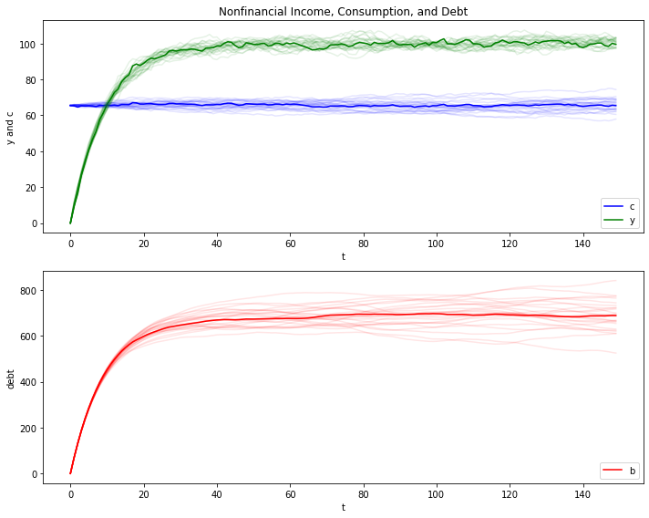
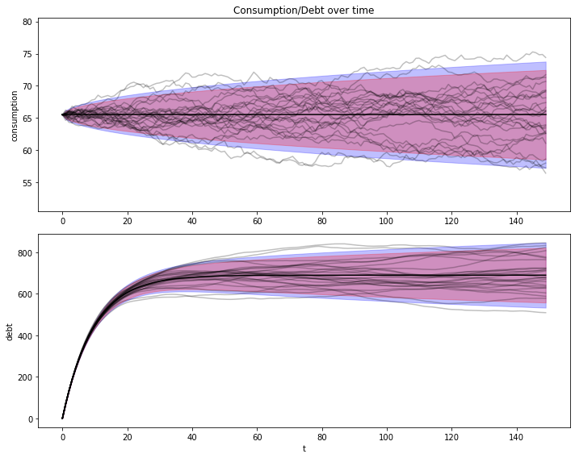
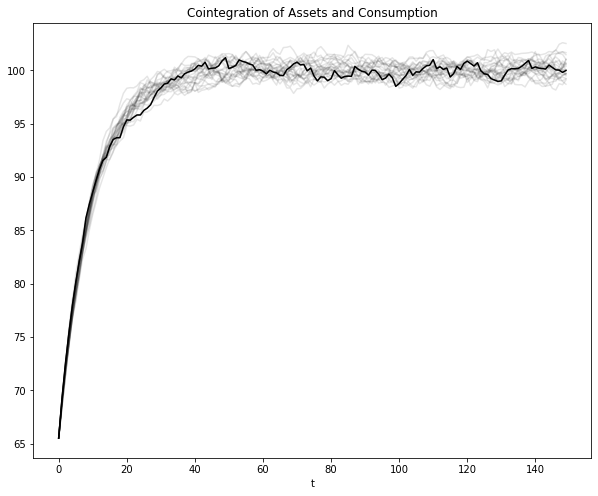
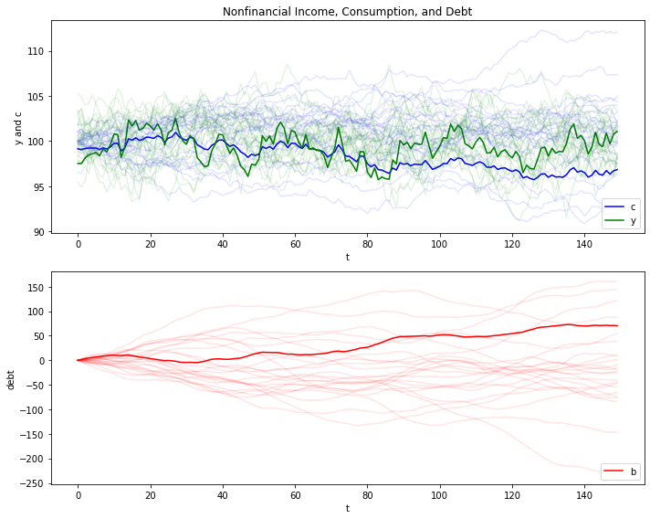
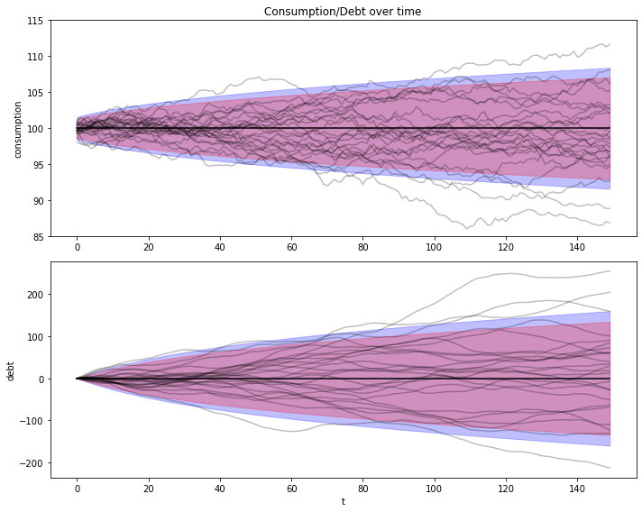
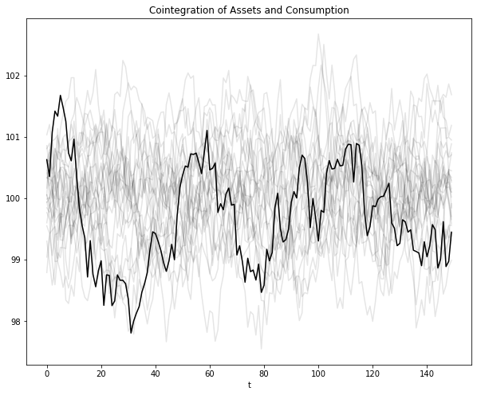

<!DOCTYPE html>

<html>
  <head>
    <meta charset="utf-8" />
    <meta name="viewport" content="width=device-width, initial-scale=1.0">
    <title>43. Permanent Income II: LQ Techniques &#8212; Quantitative Economics with Python</title>
    <link rel="stylesheet" href="_static/quantecon-book-theme.css" type="text/css" />
    <link rel="stylesheet" href="_static/pygments.css" type="text/css" />
    <link rel="stylesheet" type="text/css" href="_static/togglebutton.css" />
    <link rel="stylesheet" type="text/css" href="_static/copybutton.css" />
    <link rel="stylesheet" type="text/css" href="_static/mystnb.css" />
    <link rel="stylesheet" type="text/css" href="_static/sphinx-thebe.css" />
    <link rel="stylesheet" type="text/css" href="_static/panels-main.c949a650a448cc0ae9fd3441c0e17fb0.css" />
    <link rel="stylesheet" type="text/css" href="_static/panels-variables.06eb56fa6e07937060861dad626602ad.css" />
    <script id="documentation_options" data-url_root="./" src="_static/documentation_options.js"></script>
    <script src="_static/quantecon-book-theme.js"></script>
    <script src="_static/jquery.js"></script>
    <script src="_static/underscore.js"></script>
    <script src="_static/doctools.js"></script>
    <script src="_static/language_data.js"></script>
    <script src="_static/togglebutton.js"></script>
    <script src="_static/clipboard.min.js"></script>
    <script src="_static/copybutton.js"></script>
    <script src="_static/quantecon-book-theme.js"></script>
    <script >var togglebuttonSelector = '.toggle, .admonition.dropdown, .tag_hide_input div.cell_input, .tag_hide-input div.cell_input, .tag_hide_output div.cell_output, .tag_hide-output div.cell_output, .tag_hide_cell.cell, .tag_hide-cell.cell';</script>
    <script src="_static/sphinx-book-theme.d31b09fe5c1d09cb49b26a786de4a05d.js"></script>
    <script async="async" src="https://cdnjs.cloudflare.com/ajax/libs/mathjax/2.7.7/latest.js?config=TeX-AMS-MML_HTMLorMML"></script>
    <script type="text/x-mathjax-config">MathJax.Hub.Config({"tex2jax": {"inlineMath": [["\\(", "\\)"]], "displayMath": [["\\[", "\\]"]], "processRefs": false, "processEnvironments": false}})</script>
    <script async="async" src="https://unpkg.com/thebelab@latest/lib/index.js"></script>
    <script >
        const thebe_selector = ".thebe"
        const thebe_selector_input = "pre"
        const thebe_selector_output = ".output"
    </script>
    <script async="async" src="_static/sphinx-thebe.js"></script>
    <link rel="canonical" href="https://python.quantecon.org/perm_income_cons.html" />
    <link rel="shortcut icon" href="_static/lectures-favicon.ico"/>
    <link rel="index" title="Index" href="genindex.html" />
    <link rel="search" title="Search" href="search.html" />
    <link rel="next" title="44. Production Smoothing via Inventories" href="lq_inventories.html" />
    <link rel="prev" title="42. The Permanent Income Model" href="perm_income.html" />

<!-- Normal Meta Tags -->
<meta name="author" context="Thomas J. Sargent &amp; John Stachurski" />
<meta name="keywords" content="Python, QuantEcon, Quantitative Economics, Economics, Sloan, Alfred P. Sloan Foundation, Tom J. Sargent, John Stachurski" />
<meta name="description" content=This website presents a set of lectures on quantitative economic modeling, designed and written by Thomas J. Sargent and John Stachurski. />

<!-- Twitter tags -->
<meta name="twitter:card" content="summary" />
<meta name="twitter:site" content="@quantecon" />
<meta name="twitter:title" content="Permanent Income II: LQ Techniques"/>
<meta name="twitter:description" content="This website presents a set of lectures on quantitative economic modeling, designed and written by Thomas J. Sargent and John Stachurski.">
<meta name="twitter:creator" content="@quantecon">
<meta name="twitter:image" content="https://assets.quantecon.org/img/qe-twitter-logo.png">

<!-- Opengraph tags -->
<meta property="og:title" content="Permanent Income II: LQ Techniques" />
<meta property="og:type" content="website" />
<meta property="og:url" content="https://python.quantecon.org/perm_income_cons.html" />
<meta property="og:image" content="https://assets.quantecon.org/img/qe-og-logo.png" />
<meta property="og:description" content="This website presents a set of lectures on quantitative economic modeling, designed and written by Thomas J. Sargent and John Stachurski." />
<meta property="og:site_name" content="Quantitative Economics with Python" />

<meta name="theme-color" content="#ffffff" />


  </head>
<body>


    <span id="top"></span>

    <div class="wrapper">

        <div class="main">

            <div class="page">

                <div class="page__toc">

                    <div class="inner">

                        
                        <div class="page__toc-header">
                            On this page
                        </div>


                        <nav id="bd-toc-nav" class="page__toc-nav">

                            <ul class="nav section-nav flex-column">
                                
                                <li class="nav-item toc-entry toc-h2">
                                    <a href="#overview" class="nav-link">Overview</a>
                                </li>
                                
                                <li class="nav-item toc-entry toc-h2">
                                    <a href="#setup" class="nav-link">Setup</a><ul class="nav section-nav flex-column">
                                        
                                <li class="nav-item toc-entry toc-h3">
                                    <a href="#digression-on-a-useful-isomorphism" class="nav-link">Digression on a Useful Isomorphism</a>
                                </li>
                                
                                <li class="nav-item toc-entry toc-h3">
                                    <a href="#a-specification-of-the-nonfinancial-income-process" class="nav-link">A Specification of the Nonfinancial Income Process</a>
                                </li>
                                
                                    </ul>
                                </li>
                                
                                <li class="nav-item toc-entry toc-h2">
                                    <a href="#the-lq-approach" class="nav-link">The LQ Approach</a><ul class="nav section-nav flex-column">
                                        
                                <li class="nav-item toc-entry toc-h3">
                                    <a href="#the-lq-problem" class="nav-link">The LQ Problem</a>
                                </li>
                                
                                <li class="nav-item toc-entry toc-h3">
                                    <a href="#mapping-into-the-lq-framework" class="nav-link">Mapping into the LQ Framework</a>
                                </li>
                                
                                    </ul>
                                </li>
                                
                                <li class="nav-item toc-entry toc-h2">
                                    <a href="#implementation" class="nav-link">Implementation</a><ul class="nav section-nav flex-column">
                                        
                                <li class="nav-item toc-entry toc-h3">
                                    <a href="#the-exogenous-nonfinancial-income-process" class="nav-link">The Exogenous Nonfinancial Income Process</a>
                                </li>
                                
                                <li class="nav-item toc-entry toc-h3">
                                    <a href="#comparison-with-the-difference-equation-approach" class="nav-link">Comparison with the Difference Equation Approach</a>
                                </li>
                                
                                    </ul>
                                </li>
                                
                                <li class="nav-item toc-entry toc-h2">
                                    <a href="#two-example-economies" class="nav-link">Two Example Economies</a><ul class="nav section-nav flex-column">
                                        
                                <li class="nav-item toc-entry toc-h3">
                                    <a href="#first-set-of-initial-conditions" class="nav-link">First Set of Initial Conditions</a>
                                </li>
                                
                                <li class="nav-item toc-entry toc-h3">
                                    <a href="#population-and-sample-panels" class="nav-link">Population and Sample Panels</a><ul class="nav section-nav flex-column">
                                        
                                <li class="nav-item toc-entry toc-h4">
                                    <a href="#cointegration-residual" class="nav-link">Cointegration Residual</a>
                                </li>
                                
                                    </ul>
                                </li>
                                
                                <li class="nav-item toc-entry toc-h3">
                                    <a href="#a-borrowers-and-lenders-closed-economy" class="nav-link">A “Borrowers and Lenders” Closed Economy</a>
                                </li>
                                
                                    </ul>
                                </li>
                                
                            </ul>

                            <p class="logo">
                                
                                    
                                    <a href=https://quantecon.org></a>
                                    
                                
                            </p>

                            <p class="powered">Powered by <a href="https://jupyterbook.org/">Jupyter Book</a></p>

                        </nav>

                        <div class="page__toc-footer">
                            
                            
                            <p><a href="#top"><strong>Back to top</strong></a></p>
                        </div>

                    </div>

                </div>

                <div class="page__header">

                    <div class="page__header-copy">

                        <p class="page__header-heading"><a href="intro.html">Quantitative Economics with Python</a></p>

                        <p class="page__header-subheading">Permanent Income II: LQ Techniques</p>

                    </div>

                    <p class="page__header-authors">Thomas J. Sargent & John Stachurski</p>

                </div> <!-- .page__header -->


                
                <main class="page__content" role="main">
                    
                    <div>
                        
  <div id="qe-notebook-header" align="right" style="text-align:right;">
        <a href="https://quantecon.org/" title="quantecon.org">
                
        </a>
</div><div class="section" id="permanent-income-ii-lq-techniques">
<h1><a class="toc-backref" href="#id7"><span class="section-number">43. </span><span class="target" id="index-0"></span>Permanent Income II: LQ Techniques</a><a class="headerlink" href="#permanent-income-ii-lq-techniques" title="Permalink to this headline">¶</a></h1>
<div class="contents topic" id="contents">
<span id="index-1"></span><p class="topic-title">Contents</p>
<ul class="simple">
<li><p><a class="reference internal" href="#permanent-income-ii-lq-techniques" id="id7">Permanent Income II: LQ Techniques</a></p>
<ul>
<li><p><a class="reference internal" href="#overview" id="id8">Overview</a></p></li>
<li><p><a class="reference internal" href="#setup" id="id9">Setup</a></p></li>
<li><p><a class="reference internal" href="#the-lq-approach" id="id10">The LQ Approach</a></p></li>
<li><p><a class="reference internal" href="#implementation" id="id11">Implementation</a></p></li>
<li><p><a class="reference internal" href="#two-example-economies" id="id12">Two Example Economies</a></p></li>
</ul>
</li>
</ul>
</div>
<p>In addition to what’s in Anaconda, this lecture will need the following libraries:</p>
<div class="cell tag_hide-output docutils container">
<div class="cell_input docutils container">
<div class="highlight-ipython3 notranslate"><div class="highlight"><pre><span></span><span class="o">!</span>conda install -y quantecon
</pre></div>
</div>
</div>
<div class="cell_output docutils container">
<div class="output stream highlight-myst-ansi notranslate"><div class="highlight"><pre><span></span>Collecting package metadata (current_repodata.json): - 
</pre></div>
</div>
<div class="output stream highlight-myst-ansi notranslate"><div class="highlight"><pre><span></span>\ 
</pre></div>
</div>
<div class="output stream highlight-myst-ansi notranslate"><div class="highlight"><pre><span></span>| 
</pre></div>
</div>
<div class="output stream highlight-myst-ansi notranslate"><div class="highlight"><pre><span></span>/ 
</pre></div>
</div>
<div class="output stream highlight-myst-ansi notranslate"><div class="highlight"><pre><span></span>- 
</pre></div>
</div>
<div class="output stream highlight-myst-ansi notranslate"><div class="highlight"><pre><span></span>\ 
</pre></div>
</div>
<div class="output stream highlight-myst-ansi notranslate"><div class="highlight"><pre><span></span>| 
</pre></div>
</div>
<div class="output stream highlight-myst-ansi notranslate"><div class="highlight"><pre><span></span>/ 
</pre></div>
</div>
<div class="output stream highlight-myst-ansi notranslate"><div class="highlight"><pre><span></span>- 
</pre></div>
</div>
<div class="output stream highlight-myst-ansi notranslate"><div class="highlight"><pre><span></span>\ 
</pre></div>
</div>
<div class="output stream highlight-myst-ansi notranslate"><div class="highlight"><pre><span></span>done
Solving environment: / 
</pre></div>
</div>
<div class="output stream highlight-myst-ansi notranslate"><div class="highlight"><pre><span></span>- 
</pre></div>
</div>
<div class="output stream highlight-myst-ansi notranslate"><div class="highlight"><pre><span></span>\ 
</pre></div>
</div>
<div class="output stream highlight-myst-ansi notranslate"><div class="highlight"><pre><span></span>| 
</pre></div>
</div>
<div class="output stream highlight-myst-ansi notranslate"><div class="highlight"><pre><span></span>/ 
</pre></div>
</div>
<div class="output stream highlight-myst-ansi notranslate"><div class="highlight"><pre><span></span>- 
</pre></div>
</div>
<div class="output stream highlight-myst-ansi notranslate"><div class="highlight"><pre><span></span>\ 
</pre></div>
</div>
<div class="output stream highlight-myst-ansi notranslate"><div class="highlight"><pre><span></span>| 
</pre></div>
</div>
<div class="output stream highlight-myst-ansi notranslate"><div class="highlight"><pre><span></span>/ 
</pre></div>
</div>
<div class="output stream highlight-myst-ansi notranslate"><div class="highlight"><pre><span></span>- 
</pre></div>
</div>
<div class="output stream highlight-myst-ansi notranslate"><div class="highlight"><pre><span></span>\ 
</pre></div>
</div>
<div class="output stream highlight-myst-ansi notranslate"><div class="highlight"><pre><span></span>| 
</pre></div>
</div>
<div class="output stream highlight-myst-ansi notranslate"><div class="highlight"><pre><span></span>/ 
</pre></div>
</div>
<div class="output stream highlight-myst-ansi notranslate"><div class="highlight"><pre><span></span>- 
</pre></div>
</div>
<div class="output stream highlight-myst-ansi notranslate"><div class="highlight"><pre><span></span>\ 
</pre></div>
</div>
<div class="output stream highlight-myst-ansi notranslate"><div class="highlight"><pre><span></span>| 
</pre></div>
</div>
<div class="output stream highlight-myst-ansi notranslate"><div class="highlight"><pre><span></span>/ 
</pre></div>
</div>
<div class="output stream highlight-myst-ansi notranslate"><div class="highlight"><pre><span></span>- 
</pre></div>
</div>
<div class="output stream highlight-myst-ansi notranslate"><div class="highlight"><pre><span></span>done
</pre></div>
</div>
<div class="output stream highlight-myst-ansi notranslate"><div class="highlight"><pre><span></span># All requested packages already installed.
</pre></div>
</div>
</div>
</div>
<div class="section" id="overview">
<h2><a class="toc-backref" href="#id8"><span class="section-number">43.1. </span>Overview</a><a class="headerlink" href="#overview" title="Permalink to this headline">¶</a></h2>
<p>This lecture continues our analysis of the linear-quadratic (LQ) permanent income model of savings and consumption.</p>
<p>As we saw in our <a class="reference internal" href="perm_income.html"><span class="doc">previous lecture</span></a> on this topic, Robert Hall <a class="bibtex reference internal" href="zreferences.html#hall1978" id="id1">[Hal78]</a> used the LQ permanent income model to restrict and interpret intertemporal comovements of nondurable consumption, nonfinancial income, and financial wealth.</p>
<p>For example, we saw how the model asserts that for any covariance stationary process for nonfinancial income</p>
<ul class="simple">
<li><p>consumption is a random walk</p></li>
<li><p>financial wealth has a unit root and is cointegrated with consumption</p></li>
</ul>
<p>Other applications use the same LQ framework.</p>
<p>For example, a model isomorphic to the LQ permanent income model has been used by Robert Barro <a class="bibtex reference internal" href="zreferences.html#barro1979" id="id2">[Bar79]</a> to interpret intertemporal comovements of a government’s tax collections, its  expenditures net of debt service, and its public debt.</p>
<p>This isomorphism means that in analyzing the LQ permanent income model, we are in effect also analyzing  the Barro tax smoothing model.</p>
<p>It is just a matter of appropriately relabeling the variables in Hall’s model.</p>
<p>In this lecture, we’ll</p>
<ul class="simple">
<li><p>show how the solution to the LQ permanent income model can be obtained using LQ control methods.</p></li>
<li><p>represent the model as a linear state space system as in <a class="reference internal" href="linear_models.html"><span class="doc">this lecture</span></a>.</p></li>
<li><p>apply <a class="reference external" href="http://quantecon.org/quantecon-py">QuantEcon</a>’s <a class="reference external" href="https://github.com/QuantEcon/QuantEcon.py/blob/master/quantecon/lss.py">LinearStateSpace</a> class to characterize statistical features of the consumer’s optimal consumption and borrowing plans.</p></li>
</ul>
<p>We’ll then use these characterizations to construct a simple model of cross-section wealth and
consumption dynamics in the spirit of Truman Bewley <a class="bibtex reference internal" href="zreferences.html#bewley86" id="id3">[Bew86]</a>.</p>
<p>(Later we’ll study other Bewley models—see <a class="reference internal" href="aiyagari.html"><span class="doc">this lecture</span></a>)</p>
<p>The model will prove useful for illustrating concepts such as</p>
<ul class="simple">
<li><p>stationarity</p></li>
<li><p>ergodicity</p></li>
<li><p>ensemble moments and cross-section observations</p></li>
</ul>
<p>Let’s start with some imports:</p>
<div class="cell docutils container">
<div class="cell_input docutils container">
<div class="highlight-ipython3 notranslate"><div class="highlight"><pre><span></span><span class="kn">import</span> <span class="nn">quantecon</span> <span class="k">as</span> <span class="nn">qe</span>
<span class="kn">import</span> <span class="nn">numpy</span> <span class="k">as</span> <span class="nn">np</span>
<span class="kn">import</span> <span class="nn">scipy.linalg</span> <span class="k">as</span> <span class="nn">la</span>
<span class="kn">import</span> <span class="nn">matplotlib.pyplot</span> <span class="k">as</span> <span class="nn">plt</span>
<span class="o">%</span><span class="k">matplotlib</span> inline
</pre></div>
</div>
</div>
</div>
</div>
<div class="section" id="setup">
<h2><a class="toc-backref" href="#id9"><span class="section-number">43.2. </span>Setup</a><a class="headerlink" href="#setup" title="Permalink to this headline">¶</a></h2>
<p>Let’s recall the basic features of the model discussed in the <a class="reference internal" href="perm_income.html"><span class="doc">permanent income model</span></a>.</p>
<p>Consumer preferences are ordered  by</p>
<div class="math notranslate nohighlight" id="equation-old1">
<span class="eqno">(43.1)<a class="headerlink" href="#equation-old1" title="Permalink to this equation">¶</a></span>\[E_0 \sum_{t=0}^\infty \beta^t u(c_t)\]</div>
<p>where <span class="math notranslate nohighlight">\(u(c) = -(c - \gamma)^2\)</span>.</p>
<p>The consumer maximizes <a class="reference internal" href="#equation-old1">(43.1)</a> by choosing a
consumption, borrowing plan <span class="math notranslate nohighlight">\(\{c_t, b_{t+1}\}_{t=0}^\infty\)</span>
subject to the sequence of budget constraints</p>
<div class="math notranslate nohighlight" id="equation-old2">
<span class="eqno">(43.2)<a class="headerlink" href="#equation-old2" title="Permalink to this equation">¶</a></span>\[c_t + b_t = \frac{1}{1 + r} b_{t+1}  + y_t,
\quad t \geq 0\]</div>
<p>and the no-Ponzi condition</p>
<div class="math notranslate nohighlight" id="equation-old42">
<span class="eqno">(43.3)<a class="headerlink" href="#equation-old42" title="Permalink to this equation">¶</a></span>\[E_0 \sum_{t=0}^\infty \beta^t b_t^2 &lt; \infty\]</div>
<p>The interpretation of all variables and parameters are the same as in the
<a class="reference internal" href="perm_income.html"><span class="doc">previous lecture</span></a>.</p>
<p>We continue to assume that <span class="math notranslate nohighlight">\((1 + r) \beta = 1\)</span>.</p>
<p>The dynamics of <span class="math notranslate nohighlight">\(\{y_t\}\)</span> again follow the linear state space model</p>
<div class="math notranslate nohighlight" id="equation-sprob15ab2">
<span class="eqno">(43.4)<a class="headerlink" href="#equation-sprob15ab2" title="Permalink to this equation">¶</a></span>\[\begin{split}\begin{aligned}
    z_{t+1} &amp; = A z_t + C w_{t+1}
    \\
    y_t &amp; = U  z_t
\end{aligned}\end{split}\]</div>
<p>The restrictions on the shock process and parameters are the same as in our <a class="reference internal" href="perm_income.html"><span class="doc">previous lecture</span></a>.</p>
<div class="section" id="digression-on-a-useful-isomorphism">
<h3><span class="section-number">43.2.1. </span>Digression on a Useful Isomorphism<a class="headerlink" href="#digression-on-a-useful-isomorphism" title="Permalink to this headline">¶</a></h3>
<p>The LQ permanent income model of consumption is mathematically isomorphic with a version of
Barro’s <a class="bibtex reference internal" href="zreferences.html#barro1979" id="id4">[Bar79]</a> model of tax smoothing.</p>
<p>In the LQ permanent income model</p>
<ul class="simple">
<li><p>the household faces an exogenous process of nonfinancial income</p></li>
<li><p>the household wants to smooth consumption across states and time</p></li>
</ul>
<p>In the Barro tax smoothing model</p>
<ul class="simple">
<li><p>a government faces an exogenous sequence of government purchases (net of  interest payments on its debt)</p></li>
<li><p>a government wants to smooth tax collections across states and time</p></li>
</ul>
<p>If we set</p>
<ul class="simple">
<li><p><span class="math notranslate nohighlight">\(T_t\)</span>, total tax collections in Barro’s model to consumption <span class="math notranslate nohighlight">\(c_t\)</span> in the LQ permanent income model.</p></li>
<li><p><span class="math notranslate nohighlight">\(G_t\)</span>, exogenous government expenditures in Barro’s model to nonfinancial income <span class="math notranslate nohighlight">\(y_t\)</span> in the permanent income model.</p></li>
<li><p><span class="math notranslate nohighlight">\(B_t\)</span>, government risk-free one-period assets falling due in Barro’s model to  risk-free one-period consumer debt <span class="math notranslate nohighlight">\(b_t\)</span> falling due in the LQ permanent income model.</p></li>
<li><p><span class="math notranslate nohighlight">\(R\)</span>, the gross rate of return on risk-free one-period government debt in Barro’s model to the gross rate of return <span class="math notranslate nohighlight">\(1+r\)</span> on financial assets in  the permanent income model of consumption.</p></li>
</ul>
<p>then the two models are mathematically equivalent.</p>
<p>All characterizations of a <span class="math notranslate nohighlight">\(\{c_t, y_t, b_t\}\)</span> in the LQ permanent income model automatically apply to a <span class="math notranslate nohighlight">\(\{T_t, G_t, B_t\}\)</span> process in the Barro model of tax smoothing.</p>
<p>See <a class="reference external" href="https://python-advanced.quantecon.org/smoothing.html">consumption and tax smoothing models</a> for further exploitation of an isomorphism between consumption and tax smoothing models.</p>
</div>
<div class="section" id="a-specification-of-the-nonfinancial-income-process">
<h3><span class="section-number">43.2.2. </span>A Specification of the Nonfinancial Income Process<a class="headerlink" href="#a-specification-of-the-nonfinancial-income-process" title="Permalink to this headline">¶</a></h3>
<p>For the purposes of this lecture, let’s assume <span class="math notranslate nohighlight">\(\{y_t\}\)</span> is a second-order univariate autoregressive process:</p>
<div class="math notranslate nohighlight">
\[
y_{t+1} = \alpha + \rho_1 y_t + \rho_2 y_{t-1} + \sigma w_{t+1}
\]</div>
<p>We can map this into the linear state space framework in <a class="reference internal" href="#equation-sprob15ab2">(43.4)</a>, as
discussed in our lecture on  <a class="reference internal" href="linear_models.html"><span class="doc">linear models</span></a>.</p>
<p>To do so we take</p>
<div class="math notranslate nohighlight">
\[\begin{split}
z_t =
\begin{bmatrix}
    1 \\
    y_t \\
    y_{t-1}
\end{bmatrix},
\quad
A = \begin{bmatrix}
          1 &amp; 0 &amp; 0 \\
          \alpha &amp; \rho_1 &amp; \rho_2  \\
          0 &amp; 1 &amp; 0
    \end{bmatrix},
\quad
C= \begin{bmatrix}
    0 \\
    \sigma \\
    0
    \end{bmatrix},
\quad \text{and} \quad
U = \begin{bmatrix} 0 &amp; 1 &amp; 0 \end{bmatrix}
\end{split}\]</div>
</div>
</div>
<div class="section" id="the-lq-approach">
<h2><a class="toc-backref" href="#id10"><span class="section-number">43.3. </span>The LQ Approach</a><a class="headerlink" href="#the-lq-approach" title="Permalink to this headline">¶</a></h2>
<p><a class="reference internal" href="perm_income.html#odr-pi"><span class="std std-ref">Previously</span></a> we solved the permanent income model  by solving a system of linear expectational difference equations subject to two boundary conditions.</p>
<p>Here we solve the same model using <a class="reference internal" href="lqcontrol.html"><span class="doc">LQ methods</span></a> based on dynamic programming.</p>
<p>After confirming that answers produced by the two methods agree, we apply <a class="reference external" href="http://quantecon.org/quantecon-py">QuantEcon</a>’s <a class="reference external" href="https://github.com/QuantEcon/QuantEcon.py/blob/master/quantecon/lss.py">LinearStateSpace</a>
class to illustrate features of the model.</p>
<p>Why solve a model in two distinct ways?</p>
<p>Because by doing so we gather insights about the structure of the model.</p>
<p>Our earlier approach based on solving a system of expectational difference equations brought to the fore the role of the consumer’s expectations about future nonfinancial income.</p>
<p>On the other hand, formulating the model in terms of an LQ dynamic programming problem reminds us that</p>
<ul class="simple">
<li><p>finding the state (of a dynamic programming problem) is an art, and</p></li>
<li><p>iterations on a Bellman equation  implicitly jointly solve both a  forecasting problem and a control problem</p></li>
</ul>
<div class="section" id="the-lq-problem">
<h3><span class="section-number">43.3.1. </span>The LQ Problem<a class="headerlink" href="#the-lq-problem" title="Permalink to this headline">¶</a></h3>
<p>Recall from our <a class="reference internal" href="lqcontrol.html"><span class="doc">lecture on LQ theory</span></a> that the optimal linear regulator problem is to choose
a decision rule for <span class="math notranslate nohighlight">\(u_t\)</span> to minimize</p>
<div class="math notranslate nohighlight">
\[
\mathbb E
\sum_{t=0}^\infty \beta^t \{x'_t R x_t+ u'_t Q u_t\},
\]</div>
<p>subject to <span class="math notranslate nohighlight">\(x_0\)</span> given and the law of motion</p>
<div class="math notranslate nohighlight" id="equation-pilqsd">
<span class="eqno">(43.5)<a class="headerlink" href="#equation-pilqsd" title="Permalink to this equation">¶</a></span>\[x_{t+1} =  \tilde A x_t+ \tilde B u_t+ \tilde C w_{t+1},
\qquad t\geq 0,\]</div>
<p>where <span class="math notranslate nohighlight">\(w_{t+1}\)</span> is IID with mean vector zero and <span class="math notranslate nohighlight">\(\mathbb E w_t w'_t= I\)</span>.</p>
<p>The tildes in <span class="math notranslate nohighlight">\(\tilde A, \tilde B, \tilde C\)</span> are to avoid clashing with notation in <a class="reference internal" href="#equation-sprob15ab2">(43.4)</a>.</p>
<p>The value function for this problem is <span class="math notranslate nohighlight">\(v(x) = - x'Px - d\)</span>, where</p>
<ul class="simple">
<li><p><span class="math notranslate nohighlight">\(P\)</span> is the unique positive semidefinite solution of the <a class="reference internal" href="lqcontrol.html#riccati-equation"><span class="std std-ref">corresponding matrix Riccati equation</span></a>.</p></li>
<li><p>The scalar <span class="math notranslate nohighlight">\(d\)</span> is given by <span class="math notranslate nohighlight">\(d=\beta (1-\beta)^{-1} {\rm trace} ( P \tilde C \tilde C')\)</span>.</p></li>
</ul>
<p>The optimal policy is <span class="math notranslate nohighlight">\(u_t = -Fx_t\)</span>, where <span class="math notranslate nohighlight">\(F := \beta (Q+\beta \tilde B'P \tilde B)^{-1} \tilde B'P \tilde A\)</span>.</p>
<p>Under an optimal decision rule <span class="math notranslate nohighlight">\(F\)</span>, the state vector <span class="math notranslate nohighlight">\(x_t\)</span> evolves according to <span class="math notranslate nohighlight">\(x_{t+1} = (\tilde A-\tilde BF) x_t + \tilde C w_{t+1}\)</span>.</p>
</div>
<div class="section" id="mapping-into-the-lq-framework">
<h3><span class="section-number">43.3.2. </span>Mapping into the LQ Framework<a class="headerlink" href="#mapping-into-the-lq-framework" title="Permalink to this headline">¶</a></h3>
<p>To map into the LQ framework, we’ll use</p>
<div class="math notranslate nohighlight">
\[\begin{split}
x_t :=
    \begin{bmatrix}
        z_t \\
        b_t
    \end{bmatrix} =
    \begin{bmatrix}
        1 \\
        y_t \\
        y_{t-1} \\
        b_t
    \end{bmatrix}
\end{split}\]</div>
<p>as the state vector and <span class="math notranslate nohighlight">\(u_t := c_t - \gamma\)</span> as the control.</p>
<p>With this notation and <span class="math notranslate nohighlight">\(U_\gamma := \begin{bmatrix} \gamma &amp; 0 &amp; 0
\end{bmatrix}\)</span>, we can write the state dynamics as in <a class="reference internal" href="#equation-pilqsd">(43.5)</a> when</p>
<div class="math notranslate nohighlight">
\[\begin{split}
\tilde A :=
     \begin{bmatrix}
        A  &amp;  0 \\
        (1 + r)(U_\gamma - U) &amp; 1 + r
     \end{bmatrix}
\quad
\tilde B :=
   \begin{bmatrix}
   0 \\
   1 + r
   \end{bmatrix}
\quad \text{and} \quad
\tilde C :=
   \begin{bmatrix}
   C \\ 0
   \end{bmatrix}
   w_{t+1}
\end{split}\]</div>
<p>Please confirm for yourself that, with these definitions, the LQ dynamics <a class="reference internal" href="#equation-pilqsd">(43.5)</a>  match the dynamics of <span class="math notranslate nohighlight">\(z_t\)</span> and <span class="math notranslate nohighlight">\(b_t\)</span> described above.</p>
<p>To map utility into the quadratic form <span class="math notranslate nohighlight">\(x_t' R x_t + u_t'Q u_t\)</span> we can set</p>
<ul class="simple">
<li><p><span class="math notranslate nohighlight">\(Q := 1\)</span> (remember that we are minimizing) and</p></li>
<li><p><span class="math notranslate nohighlight">\(R :=\)</span> a <span class="math notranslate nohighlight">\(4 \times 4\)</span> matrix of zeros</p></li>
</ul>
<p>However, there is one problem remaining.</p>
<p>We have no direct way to capture the non-recursive restriction <a class="reference internal" href="#equation-old42">(43.3)</a>
on the debt sequence <span class="math notranslate nohighlight">\(\{b_t\}\)</span> from within the LQ framework.</p>
<p>To try to enforce it, we’re going to use a trick: put a small penalty on <span class="math notranslate nohighlight">\(b_t^2\)</span> in the criterion function.</p>
<p>In the present setting, this means adding a small entry <span class="math notranslate nohighlight">\(\epsilon &gt; 0\)</span> in the <span class="math notranslate nohighlight">\((4,4)\)</span> position of <span class="math notranslate nohighlight">\(R\)</span>.</p>
<p>That will induce a (hopefully) small approximation error in the decision rule.</p>
<p>We’ll check whether it really is small numerically soon.</p>
</div>
</div>
<div class="section" id="implementation">
<h2><a class="toc-backref" href="#id11"><span class="section-number">43.4. </span>Implementation</a><a class="headerlink" href="#implementation" title="Permalink to this headline">¶</a></h2>
<p>Let’s write some code to solve the model.</p>
<p>One comment before we start is that the bliss level of consumption <span class="math notranslate nohighlight">\(\gamma\)</span> in the utility function has no effect on the optimal decision rule.</p>
<p>We saw this in the previous lecture  <a class="reference internal" href="perm_income.html"><span class="doc">permanent income</span></a>.</p>
<p>The reason is that it drops out of the Euler equation for consumption.</p>
<p>In what follows we set it equal to unity.</p>
<div class="section" id="the-exogenous-nonfinancial-income-process">
<h3><span class="section-number">43.4.1. </span>The Exogenous Nonfinancial Income Process<a class="headerlink" href="#the-exogenous-nonfinancial-income-process" title="Permalink to this headline">¶</a></h3>
<p>First, we create the objects for the optimal linear regulator</p>
<div class="cell docutils container">
<div class="cell_input docutils container">
<div class="highlight-ipython3 notranslate"><div class="highlight"><pre><span></span><span class="c1"># Set parameters</span>
<span class="n">α</span><span class="p">,</span> <span class="n">β</span><span class="p">,</span> <span class="n">ρ1</span><span class="p">,</span> <span class="n">ρ2</span><span class="p">,</span> <span class="n">σ</span> <span class="o">=</span> <span class="mf">10.0</span><span class="p">,</span> <span class="mf">0.95</span><span class="p">,</span> <span class="mf">0.9</span><span class="p">,</span> <span class="mf">0.0</span><span class="p">,</span> <span class="mf">1.0</span>

<span class="n">R</span> <span class="o">=</span> <span class="mi">1</span> <span class="o">/</span> <span class="n">β</span>
<span class="n">A</span> <span class="o">=</span> <span class="n">np</span><span class="o">.</span><span class="n">array</span><span class="p">([[</span><span class="mf">1.</span><span class="p">,</span> <span class="mf">0.</span><span class="p">,</span> <span class="mf">0.</span><span class="p">],</span>
              <span class="p">[</span><span class="n">α</span><span class="p">,</span>  <span class="n">ρ1</span><span class="p">,</span> <span class="n">ρ2</span><span class="p">],</span>
              <span class="p">[</span><span class="mf">0.</span><span class="p">,</span> <span class="mf">1.</span><span class="p">,</span> <span class="mf">0.</span><span class="p">]])</span>
<span class="n">C</span> <span class="o">=</span> <span class="n">np</span><span class="o">.</span><span class="n">array</span><span class="p">([[</span><span class="mf">0.</span><span class="p">],</span> <span class="p">[</span><span class="n">σ</span><span class="p">],</span> <span class="p">[</span><span class="mf">0.</span><span class="p">]])</span>
<span class="n">G</span> <span class="o">=</span> <span class="n">np</span><span class="o">.</span><span class="n">array</span><span class="p">([[</span><span class="mf">0.</span><span class="p">,</span> <span class="mf">1.</span><span class="p">,</span> <span class="mf">0.</span><span class="p">]])</span>

<span class="c1"># Form LinearStateSpace system and pull off steady state moments</span>
<span class="n">μ_z0</span> <span class="o">=</span> <span class="n">np</span><span class="o">.</span><span class="n">array</span><span class="p">([[</span><span class="mf">1.0</span><span class="p">],</span> <span class="p">[</span><span class="mf">0.0</span><span class="p">],</span> <span class="p">[</span><span class="mf">0.0</span><span class="p">]])</span>
<span class="n">Σ_z0</span> <span class="o">=</span> <span class="n">np</span><span class="o">.</span><span class="n">zeros</span><span class="p">((</span><span class="mi">3</span><span class="p">,</span> <span class="mi">3</span><span class="p">))</span>
<span class="n">Lz</span> <span class="o">=</span> <span class="n">qe</span><span class="o">.</span><span class="n">LinearStateSpace</span><span class="p">(</span><span class="n">A</span><span class="p">,</span> <span class="n">C</span><span class="p">,</span> <span class="n">G</span><span class="p">,</span> <span class="n">mu_0</span><span class="o">=</span><span class="n">μ_z0</span><span class="p">,</span> <span class="n">Sigma_0</span><span class="o">=</span><span class="n">Σ_z0</span><span class="p">)</span>
<span class="n">μ_z</span><span class="p">,</span> <span class="n">μ_y</span><span class="p">,</span> <span class="n">Σ_z</span><span class="p">,</span> <span class="n">Σ_y</span> <span class="o">=</span> <span class="n">Lz</span><span class="o">.</span><span class="n">stationary_distributions</span><span class="p">()</span>

<span class="c1"># Mean vector of state for the savings problem</span>
<span class="n">mxo</span> <span class="o">=</span> <span class="n">np</span><span class="o">.</span><span class="n">vstack</span><span class="p">([</span><span class="n">μ_z</span><span class="p">,</span> <span class="mf">0.0</span><span class="p">])</span>

<span class="c1"># Create stationary covariance matrix of x -- start everyone off at b=0</span>
<span class="n">a1</span> <span class="o">=</span> <span class="n">np</span><span class="o">.</span><span class="n">zeros</span><span class="p">((</span><span class="mi">3</span><span class="p">,</span> <span class="mi">1</span><span class="p">))</span>
<span class="n">aa</span> <span class="o">=</span> <span class="n">np</span><span class="o">.</span><span class="n">hstack</span><span class="p">([</span><span class="n">Σ_z</span><span class="p">,</span> <span class="n">a1</span><span class="p">])</span>
<span class="n">bb</span> <span class="o">=</span> <span class="n">np</span><span class="o">.</span><span class="n">zeros</span><span class="p">((</span><span class="mi">1</span><span class="p">,</span> <span class="mi">4</span><span class="p">))</span>
<span class="n">sxo</span> <span class="o">=</span> <span class="n">np</span><span class="o">.</span><span class="n">vstack</span><span class="p">([</span><span class="n">aa</span><span class="p">,</span> <span class="n">bb</span><span class="p">])</span>

<span class="c1"># These choices will initialize the state vector of an individual at zero</span>
<span class="c1"># debt and the ergodic distribution of the endowment process. Use these to</span>
<span class="c1"># create the Bewley economy.</span>
<span class="n">mxbewley</span> <span class="o">=</span> <span class="n">mxo</span>
<span class="n">sxbewley</span> <span class="o">=</span> <span class="n">sxo</span>
</pre></div>
</div>
</div>
</div>
<p>The next step is to create the matrices for the LQ system</p>
<div class="cell docutils container">
<div class="cell_input docutils container">
<div class="highlight-ipython3 notranslate"><div class="highlight"><pre><span></span><span class="n">A12</span> <span class="o">=</span> <span class="n">np</span><span class="o">.</span><span class="n">zeros</span><span class="p">((</span><span class="mi">3</span><span class="p">,</span><span class="mi">1</span><span class="p">))</span>
<span class="n">ALQ_l</span> <span class="o">=</span> <span class="n">np</span><span class="o">.</span><span class="n">hstack</span><span class="p">([</span><span class="n">A</span><span class="p">,</span> <span class="n">A12</span><span class="p">])</span>
<span class="n">ALQ_r</span> <span class="o">=</span> <span class="n">np</span><span class="o">.</span><span class="n">array</span><span class="p">([[</span><span class="mi">0</span><span class="p">,</span> <span class="o">-</span><span class="n">R</span><span class="p">,</span> <span class="mi">0</span><span class="p">,</span> <span class="n">R</span><span class="p">]])</span>
<span class="n">ALQ</span> <span class="o">=</span> <span class="n">np</span><span class="o">.</span><span class="n">vstack</span><span class="p">([</span><span class="n">ALQ_l</span><span class="p">,</span> <span class="n">ALQ_r</span><span class="p">])</span>

<span class="n">RLQ</span> <span class="o">=</span> <span class="n">np</span><span class="o">.</span><span class="n">array</span><span class="p">([[</span><span class="mf">0.</span><span class="p">,</span> <span class="mf">0.</span><span class="p">,</span> <span class="mf">0.</span><span class="p">,</span> <span class="mf">0.</span><span class="p">],</span>
                <span class="p">[</span><span class="mf">0.</span><span class="p">,</span> <span class="mf">0.</span><span class="p">,</span> <span class="mf">0.</span><span class="p">,</span> <span class="mf">0.</span><span class="p">],</span>
                <span class="p">[</span><span class="mf">0.</span><span class="p">,</span> <span class="mf">0.</span><span class="p">,</span> <span class="mf">0.</span><span class="p">,</span> <span class="mf">0.</span><span class="p">],</span>
                <span class="p">[</span><span class="mf">0.</span><span class="p">,</span> <span class="mf">0.</span><span class="p">,</span> <span class="mf">0.</span><span class="p">,</span> <span class="mf">1e-9</span><span class="p">]])</span>

<span class="n">QLQ</span> <span class="o">=</span> <span class="n">np</span><span class="o">.</span><span class="n">array</span><span class="p">([</span><span class="mf">1.0</span><span class="p">])</span>
<span class="n">BLQ</span> <span class="o">=</span> <span class="n">np</span><span class="o">.</span><span class="n">array</span><span class="p">([</span><span class="mf">0.</span><span class="p">,</span> <span class="mf">0.</span><span class="p">,</span> <span class="mf">0.</span><span class="p">,</span> <span class="n">R</span><span class="p">])</span><span class="o">.</span><span class="n">reshape</span><span class="p">(</span><span class="mi">4</span><span class="p">,</span><span class="mi">1</span><span class="p">)</span>
<span class="n">CLQ</span> <span class="o">=</span> <span class="n">np</span><span class="o">.</span><span class="n">array</span><span class="p">([</span><span class="mf">0.</span><span class="p">,</span> <span class="n">σ</span><span class="p">,</span> <span class="mf">0.</span><span class="p">,</span> <span class="mf">0.</span><span class="p">])</span><span class="o">.</span><span class="n">reshape</span><span class="p">(</span><span class="mi">4</span><span class="p">,</span><span class="mi">1</span><span class="p">)</span>
<span class="n">β_LQ</span> <span class="o">=</span> <span class="n">β</span>
</pre></div>
</div>
</div>
</div>
<p>Let’s print these out and have a look at them</p>
<div class="cell docutils container">
<div class="cell_input docutils container">
<div class="highlight-ipython3 notranslate"><div class="highlight"><pre><span></span><span class="nb">print</span><span class="p">(</span><span class="sa">f</span><span class="s2">&quot;A = </span><span class="se">\n</span><span class="s2"> </span><span class="si">{</span><span class="n">ALQ</span><span class="si">}</span><span class="s2">&quot;</span><span class="p">)</span>
<span class="nb">print</span><span class="p">(</span><span class="sa">f</span><span class="s2">&quot;B = </span><span class="se">\n</span><span class="s2"> </span><span class="si">{</span><span class="n">BLQ</span><span class="si">}</span><span class="s2">&quot;</span><span class="p">)</span>
<span class="nb">print</span><span class="p">(</span><span class="sa">f</span><span class="s2">&quot;R = </span><span class="se">\n</span><span class="s2"> </span><span class="si">{</span><span class="n">RLQ</span><span class="si">}</span><span class="s2">&quot;</span><span class="p">)</span>
<span class="nb">print</span><span class="p">(</span><span class="sa">f</span><span class="s2">&quot;Q = </span><span class="se">\n</span><span class="s2"> </span><span class="si">{</span><span class="n">QLQ</span><span class="si">}</span><span class="s2">&quot;</span><span class="p">)</span>
</pre></div>
</div>
</div>
<div class="cell_output docutils container">
<div class="output stream highlight-myst-ansi notranslate"><div class="highlight"><pre><span></span>A = 
 [[ 1.          0.          0.          0.        ]
 [10.          0.9         0.          0.        ]
 [ 0.          1.          0.          0.        ]
 [ 0.         -1.05263158  0.          1.05263158]]
B = 
 [[0.        ]
 [0.        ]
 [0.        ]
 [1.05263158]]
R = 
 [[0.e+00 0.e+00 0.e+00 0.e+00]
 [0.e+00 0.e+00 0.e+00 0.e+00]
 [0.e+00 0.e+00 0.e+00 0.e+00]
 [0.e+00 0.e+00 0.e+00 1.e-09]]
Q = 
 [1.]
</pre></div>
</div>
</div>
</div>
<p>Now create the appropriate instance of an LQ model</p>
<div class="cell docutils container">
<div class="cell_input docutils container">
<div class="highlight-ipython3 notranslate"><div class="highlight"><pre><span></span><span class="n">lqpi</span> <span class="o">=</span> <span class="n">qe</span><span class="o">.</span><span class="n">LQ</span><span class="p">(</span><span class="n">QLQ</span><span class="p">,</span> <span class="n">RLQ</span><span class="p">,</span> <span class="n">ALQ</span><span class="p">,</span> <span class="n">BLQ</span><span class="p">,</span> <span class="n">C</span><span class="o">=</span><span class="n">CLQ</span><span class="p">,</span> <span class="n">beta</span><span class="o">=</span><span class="n">β_LQ</span><span class="p">)</span>
</pre></div>
</div>
</div>
</div>
<p>We’ll save the implied optimal policy function soon compare them with what we get by
employing an alternative solution method</p>
<div class="cell docutils container">
<div class="cell_input docutils container">
<div class="highlight-ipython3 notranslate"><div class="highlight"><pre><span></span><span class="n">P</span><span class="p">,</span> <span class="n">F</span><span class="p">,</span> <span class="n">d</span> <span class="o">=</span> <span class="n">lqpi</span><span class="o">.</span><span class="n">stationary_values</span><span class="p">()</span>  <span class="c1"># Compute value function and decision rule</span>
<span class="n">ABF</span> <span class="o">=</span> <span class="n">ALQ</span> <span class="o">-</span> <span class="n">BLQ</span> <span class="o">@</span> <span class="n">F</span>  <span class="c1">#  Form closed loop system</span>
</pre></div>
</div>
</div>
</div>
</div>
<div class="section" id="comparison-with-the-difference-equation-approach">
<h3><span class="section-number">43.4.2. </span>Comparison with the Difference Equation Approach<a class="headerlink" href="#comparison-with-the-difference-equation-approach" title="Permalink to this headline">¶</a></h3>
<p>In our <a class="reference internal" href="perm_income.html"><span class="doc">first lecture</span></a> on the infinite horizon permanent
income problem we used a different solution method.</p>
<p>The method was based around</p>
<ul class="simple">
<li><p>deducing the Euler equations that are the first-order conditions with respect to consumption and savings.</p></li>
<li><p>using the budget constraints and boundary condition to complete a system of expectational linear difference equations.</p></li>
<li><p>solving those equations to obtain the solution.</p></li>
</ul>
<p>Expressed in state space notation, the solution took the form</p>
<div class="math notranslate nohighlight">
\[\begin{split}
\begin{aligned}
    z_{t+1} &amp; = A z_t + C w_{t+1} \\
    b_{t+1} &amp; = b_t + U [ (I -\beta A)^{-1} (A - I) ] z_t \\
        y_t &amp; = U z_t \\
        c_t &amp; = (1-\beta) [ U (I-\beta A)^{-1} z_t - b_t ]
\end{aligned}
\end{split}\]</div>
<p>Now we’ll apply the formulas in this system</p>
<div class="cell docutils container">
<div class="cell_input docutils container">
<div class="highlight-ipython3 notranslate"><div class="highlight"><pre><span></span><span class="c1"># Use the above formulas to create the optimal policies for b_{t+1} and c_t</span>
<span class="n">b_pol</span> <span class="o">=</span> <span class="n">G</span> <span class="o">@</span> <span class="n">la</span><span class="o">.</span><span class="n">inv</span><span class="p">(</span><span class="n">np</span><span class="o">.</span><span class="n">eye</span><span class="p">(</span><span class="mi">3</span><span class="p">,</span> <span class="mi">3</span><span class="p">)</span> <span class="o">-</span> <span class="n">β</span> <span class="o">*</span> <span class="n">A</span><span class="p">)</span> <span class="o">@</span> <span class="p">(</span><span class="n">A</span> <span class="o">-</span> <span class="n">np</span><span class="o">.</span><span class="n">eye</span><span class="p">(</span><span class="mi">3</span><span class="p">,</span> <span class="mi">3</span><span class="p">))</span>
<span class="n">c_pol</span> <span class="o">=</span> <span class="p">(</span><span class="mi">1</span> <span class="o">-</span> <span class="n">β</span><span class="p">)</span> <span class="o">*</span> <span class="n">G</span> <span class="o">@</span> <span class="n">la</span><span class="o">.</span><span class="n">inv</span><span class="p">(</span><span class="n">np</span><span class="o">.</span><span class="n">eye</span><span class="p">(</span><span class="mi">3</span><span class="p">,</span> <span class="mi">3</span><span class="p">)</span> <span class="o">-</span> <span class="n">β</span> <span class="o">*</span> <span class="n">A</span><span class="p">)</span>

<span class="c1"># Create the A matrix for a LinearStateSpace instance</span>
<span class="n">A_LSS1</span> <span class="o">=</span> <span class="n">np</span><span class="o">.</span><span class="n">vstack</span><span class="p">([</span><span class="n">A</span><span class="p">,</span> <span class="n">b_pol</span><span class="p">])</span>
<span class="n">A_LSS2</span> <span class="o">=</span> <span class="n">np</span><span class="o">.</span><span class="n">eye</span><span class="p">(</span><span class="mi">4</span><span class="p">,</span> <span class="mi">1</span><span class="p">,</span> <span class="o">-</span><span class="mi">3</span><span class="p">)</span>
<span class="n">A_LSS</span> <span class="o">=</span> <span class="n">np</span><span class="o">.</span><span class="n">hstack</span><span class="p">([</span><span class="n">A_LSS1</span><span class="p">,</span> <span class="n">A_LSS2</span><span class="p">])</span>

<span class="c1"># Create the C matrix for LSS methods</span>
<span class="n">C_LSS</span> <span class="o">=</span> <span class="n">np</span><span class="o">.</span><span class="n">vstack</span><span class="p">([</span><span class="n">C</span><span class="p">,</span> <span class="n">np</span><span class="o">.</span><span class="n">zeros</span><span class="p">(</span><span class="mi">1</span><span class="p">)])</span>

<span class="c1"># Create the G matrix for LSS methods</span>
<span class="n">G_LSS1</span> <span class="o">=</span> <span class="n">np</span><span class="o">.</span><span class="n">vstack</span><span class="p">([</span><span class="n">G</span><span class="p">,</span> <span class="n">c_pol</span><span class="p">])</span>
<span class="n">G_LSS2</span> <span class="o">=</span> <span class="n">np</span><span class="o">.</span><span class="n">vstack</span><span class="p">([</span><span class="n">np</span><span class="o">.</span><span class="n">zeros</span><span class="p">(</span><span class="mi">1</span><span class="p">),</span> <span class="o">-</span><span class="p">(</span><span class="mi">1</span> <span class="o">-</span> <span class="n">β</span><span class="p">)])</span>
<span class="n">G_LSS</span> <span class="o">=</span> <span class="n">np</span><span class="o">.</span><span class="n">hstack</span><span class="p">([</span><span class="n">G_LSS1</span><span class="p">,</span> <span class="n">G_LSS2</span><span class="p">])</span>

<span class="c1"># Use the following values to start everyone off at b=0, initial incomes zero</span>
<span class="n">μ_0</span> <span class="o">=</span> <span class="n">np</span><span class="o">.</span><span class="n">array</span><span class="p">([</span><span class="mf">1.</span><span class="p">,</span> <span class="mf">0.</span><span class="p">,</span> <span class="mf">0.</span><span class="p">,</span> <span class="mf">0.</span><span class="p">])</span>
<span class="n">Σ_0</span> <span class="o">=</span> <span class="n">np</span><span class="o">.</span><span class="n">zeros</span><span class="p">((</span><span class="mi">4</span><span class="p">,</span> <span class="mi">4</span><span class="p">))</span>
</pre></div>
</div>
</div>
</div>
<p><code class="docutils literal notranslate"><span class="pre">A_LSS</span></code> calculated as we have here should equal <code class="docutils literal notranslate"><span class="pre">ABF</span></code> calculated above using the LQ model</p>
<div class="cell docutils container">
<div class="cell_input docutils container">
<div class="highlight-ipython3 notranslate"><div class="highlight"><pre><span></span><span class="n">ABF</span> <span class="o">-</span> <span class="n">A_LSS</span>
</pre></div>
</div>
</div>
<div class="cell_output docutils container">
<div class="output text_plain highlight-myst-ansi notranslate"><div class="highlight"><pre><span></span>array([[ 0.00000000e+00,  0.00000000e+00,  0.00000000e+00,
         0.00000000e+00],
       [ 0.00000000e+00,  0.00000000e+00,  0.00000000e+00,
         0.00000000e+00],
       [ 0.00000000e+00,  0.00000000e+00,  0.00000000e+00,
         0.00000000e+00],
       [-9.51248178e-06,  9.51247915e-08,  0.00000000e+00,
        -1.99999923e-08]])
</pre></div>
</div>
</div>
</div>
<p>Now compare pertinent elements of <code class="docutils literal notranslate"><span class="pre">c_pol</span></code> and <code class="docutils literal notranslate"><span class="pre">F</span></code></p>
<div class="cell docutils container">
<div class="cell_input docutils container">
<div class="highlight-ipython3 notranslate"><div class="highlight"><pre><span></span><span class="nb">print</span><span class="p">(</span><span class="n">c_pol</span><span class="p">,</span> <span class="s2">&quot;</span><span class="se">\n</span><span class="s2">&quot;</span><span class="p">,</span> <span class="o">-</span><span class="n">F</span><span class="p">)</span>
</pre></div>
</div>
</div>
<div class="cell_output docutils container">
<div class="output stream highlight-myst-ansi notranslate"><div class="highlight"><pre><span></span>[[65.51724138  0.34482759  0.        ]] 
 [[ 6.55172323e+01  3.44827677e-01 -0.00000000e+00 -5.00000190e-02]]
</pre></div>
</div>
</div>
</div>
<p>We have verified that the two methods give the same solution.</p>
<p>Now let’s create instances of the <a class="reference external" href="https://github.com/QuantEcon/QuantEcon.py/blob/master/quantecon/lss.py">LinearStateSpace</a> class and use it to do some interesting experiments.</p>
<p>To do this, we’ll use the outcomes from our second method.</p>
</div>
</div>
<div class="section" id="two-example-economies">
<h2><a class="toc-backref" href="#id12"><span class="section-number">43.5. </span>Two Example Economies</a><a class="headerlink" href="#two-example-economies" title="Permalink to this headline">¶</a></h2>
<p>In the spirit of Bewley models <a class="bibtex reference internal" href="zreferences.html#bewley86" id="id5">[Bew86]</a>, we’ll generate panels of consumers.</p>
<p>The examples differ only in  the initial states with which we endow the consumers.</p>
<p>All other parameter values are kept the same in the two examples</p>
<ul class="simple">
<li><p>In the first example, all consumers begin with zero nonfinancial income and zero debt.</p>
<ul>
<li><p>The consumers are thus <em>ex-ante</em> identical.</p></li>
</ul>
</li>
<li><p>In the second example, while all begin with zero debt, we draw their initial income levels from the invariant distribution of financial income.</p>
<ul>
<li><p>Consumers are <em>ex-ante</em> heterogeneous.</p></li>
</ul>
</li>
</ul>
<p>In the first example, consumers’ nonfinancial income paths  display
pronounced transients early in the sample</p>
<ul class="simple">
<li><p>these will affect outcomes in striking ways</p></li>
</ul>
<p>Those transient effects will not be present in the second example.</p>
<p>We use methods affiliated with the <a class="reference external" href="https://github.com/QuantEcon/QuantEcon.py/blob/master/quantecon/lss.py">LinearStateSpace</a> class to simulate the model.</p>
<div class="section" id="first-set-of-initial-conditions">
<h3><span class="section-number">43.5.1. </span>First Set of Initial Conditions<a class="headerlink" href="#first-set-of-initial-conditions" title="Permalink to this headline">¶</a></h3>
<p>We generate  25 paths of the exogenous non-financial income process and the associated optimal consumption and debt paths.</p>
<p>In the first set of graphs,  darker lines depict a particular sample path, while the lighter lines describe 24 other  paths.</p>
<p>A second graph  plots a collection of simulations against the population distribution that we extract from the <code class="docutils literal notranslate"><span class="pre">LinearStateSpace</span></code> instance <code class="docutils literal notranslate"><span class="pre">LSS</span></code>.</p>
<p>Comparing sample paths with population distributions at each date <span class="math notranslate nohighlight">\(t\)</span> is a useful exercise—see <a class="reference internal" href="lln_clt.html#lln-mr"><span class="std std-ref">our discussion</span></a> of the laws of large numbers</p>
<div class="cell docutils container">
<div class="cell_input docutils container">
<div class="highlight-ipython3 notranslate"><div class="highlight"><pre><span></span><span class="n">lss</span> <span class="o">=</span> <span class="n">qe</span><span class="o">.</span><span class="n">LinearStateSpace</span><span class="p">(</span><span class="n">A_LSS</span><span class="p">,</span> <span class="n">C_LSS</span><span class="p">,</span> <span class="n">G_LSS</span><span class="p">,</span> <span class="n">mu_0</span><span class="o">=</span><span class="n">μ_0</span><span class="p">,</span> <span class="n">Sigma_0</span><span class="o">=</span><span class="n">Σ_0</span><span class="p">)</span>
</pre></div>
</div>
</div>
</div>
</div>
<div class="section" id="population-and-sample-panels">
<h3><span class="section-number">43.5.2. </span>Population and Sample Panels<a class="headerlink" href="#population-and-sample-panels" title="Permalink to this headline">¶</a></h3>
<p>In the code below, we use the <a class="reference external" href="https://github.com/QuantEcon/QuantEcon.py/blob/master/quantecon/lss.py">LinearStateSpace</a> class to</p>
<ul class="simple">
<li><p>compute and plot population quantiles of the distributions of
consumption and debt for a population of consumers.</p></li>
<li><p>simulate a group of 25 consumers and plot sample paths on the same
graph as the population distribution.</p></li>
</ul>
<div class="cell docutils container">
<div class="cell_input docutils container">
<div class="highlight-ipython3 notranslate"><div class="highlight"><pre><span></span><span class="k">def</span> <span class="nf">income_consumption_debt_series</span><span class="p">(</span><span class="n">A</span><span class="p">,</span> <span class="n">C</span><span class="p">,</span> <span class="n">G</span><span class="p">,</span> <span class="n">μ_0</span><span class="p">,</span> <span class="n">Σ_0</span><span class="p">,</span> <span class="n">T</span><span class="o">=</span><span class="mi">150</span><span class="p">,</span> <span class="n">npaths</span><span class="o">=</span><span class="mi">25</span><span class="p">):</span>
    <span class="sd">&quot;&quot;&quot;</span>
<span class="sd">    This function takes initial conditions (μ_0, Σ_0) and uses the</span>
<span class="sd">    LinearStateSpace class from QuantEcon to  simulate an economy</span>
<span class="sd">    npaths times for T periods. It then uses that information to</span>
<span class="sd">    generate some graphs related to the discussion below.</span>
<span class="sd">    &quot;&quot;&quot;</span>
    <span class="n">lss</span> <span class="o">=</span> <span class="n">qe</span><span class="o">.</span><span class="n">LinearStateSpace</span><span class="p">(</span><span class="n">A</span><span class="p">,</span> <span class="n">C</span><span class="p">,</span> <span class="n">G</span><span class="p">,</span> <span class="n">mu_0</span><span class="o">=</span><span class="n">μ_0</span><span class="p">,</span> <span class="n">Sigma_0</span><span class="o">=</span><span class="n">Σ_0</span><span class="p">)</span>

    <span class="c1"># Simulation/Moment Parameters</span>
    <span class="n">moment_generator</span> <span class="o">=</span> <span class="n">lss</span><span class="o">.</span><span class="n">moment_sequence</span><span class="p">()</span>

    <span class="c1"># Simulate various paths</span>
    <span class="n">bsim</span> <span class="o">=</span> <span class="n">np</span><span class="o">.</span><span class="n">empty</span><span class="p">((</span><span class="n">npaths</span><span class="p">,</span> <span class="n">T</span><span class="p">))</span>
    <span class="n">csim</span> <span class="o">=</span> <span class="n">np</span><span class="o">.</span><span class="n">empty</span><span class="p">((</span><span class="n">npaths</span><span class="p">,</span> <span class="n">T</span><span class="p">))</span>
    <span class="n">ysim</span> <span class="o">=</span> <span class="n">np</span><span class="o">.</span><span class="n">empty</span><span class="p">((</span><span class="n">npaths</span><span class="p">,</span> <span class="n">T</span><span class="p">))</span>

    <span class="k">for</span> <span class="n">i</span> <span class="ow">in</span> <span class="nb">range</span><span class="p">(</span><span class="n">npaths</span><span class="p">):</span>
        <span class="n">sims</span> <span class="o">=</span> <span class="n">lss</span><span class="o">.</span><span class="n">simulate</span><span class="p">(</span><span class="n">T</span><span class="p">)</span>
        <span class="n">bsim</span><span class="p">[</span><span class="n">i</span><span class="p">,</span> <span class="p">:]</span> <span class="o">=</span> <span class="n">sims</span><span class="p">[</span><span class="mi">0</span><span class="p">][</span><span class="o">-</span><span class="mi">1</span><span class="p">,</span> <span class="p">:]</span>
        <span class="n">csim</span><span class="p">[</span><span class="n">i</span><span class="p">,</span> <span class="p">:]</span> <span class="o">=</span> <span class="n">sims</span><span class="p">[</span><span class="mi">1</span><span class="p">][</span><span class="mi">1</span><span class="p">,</span> <span class="p">:]</span>
        <span class="n">ysim</span><span class="p">[</span><span class="n">i</span><span class="p">,</span> <span class="p">:]</span> <span class="o">=</span> <span class="n">sims</span><span class="p">[</span><span class="mi">1</span><span class="p">][</span><span class="mi">0</span><span class="p">,</span> <span class="p">:]</span>

    <span class="c1"># Get the moments</span>
    <span class="n">cons_mean</span> <span class="o">=</span> <span class="n">np</span><span class="o">.</span><span class="n">empty</span><span class="p">(</span><span class="n">T</span><span class="p">)</span>
    <span class="n">cons_var</span> <span class="o">=</span> <span class="n">np</span><span class="o">.</span><span class="n">empty</span><span class="p">(</span><span class="n">T</span><span class="p">)</span>
    <span class="n">debt_mean</span> <span class="o">=</span> <span class="n">np</span><span class="o">.</span><span class="n">empty</span><span class="p">(</span><span class="n">T</span><span class="p">)</span>
    <span class="n">debt_var</span> <span class="o">=</span> <span class="n">np</span><span class="o">.</span><span class="n">empty</span><span class="p">(</span><span class="n">T</span><span class="p">)</span>
    <span class="k">for</span> <span class="n">t</span> <span class="ow">in</span> <span class="nb">range</span><span class="p">(</span><span class="n">T</span><span class="p">):</span>
        <span class="n">μ_x</span><span class="p">,</span> <span class="n">μ_y</span><span class="p">,</span> <span class="n">Σ_x</span><span class="p">,</span> <span class="n">Σ_y</span> <span class="o">=</span> <span class="nb">next</span><span class="p">(</span><span class="n">moment_generator</span><span class="p">)</span>
        <span class="n">cons_mean</span><span class="p">[</span><span class="n">t</span><span class="p">],</span> <span class="n">cons_var</span><span class="p">[</span><span class="n">t</span><span class="p">]</span> <span class="o">=</span> <span class="n">μ_y</span><span class="p">[</span><span class="mi">1</span><span class="p">],</span> <span class="n">Σ_y</span><span class="p">[</span><span class="mi">1</span><span class="p">,</span> <span class="mi">1</span><span class="p">]</span>
        <span class="n">debt_mean</span><span class="p">[</span><span class="n">t</span><span class="p">],</span> <span class="n">debt_var</span><span class="p">[</span><span class="n">t</span><span class="p">]</span> <span class="o">=</span> <span class="n">μ_x</span><span class="p">[</span><span class="mi">3</span><span class="p">],</span> <span class="n">Σ_x</span><span class="p">[</span><span class="mi">3</span><span class="p">,</span> <span class="mi">3</span><span class="p">]</span>

    <span class="k">return</span> <span class="n">bsim</span><span class="p">,</span> <span class="n">csim</span><span class="p">,</span> <span class="n">ysim</span><span class="p">,</span> <span class="n">cons_mean</span><span class="p">,</span> <span class="n">cons_var</span><span class="p">,</span> <span class="n">debt_mean</span><span class="p">,</span> <span class="n">debt_var</span>

<span class="k">def</span> <span class="nf">consumption_income_debt_figure</span><span class="p">(</span><span class="n">bsim</span><span class="p">,</span> <span class="n">csim</span><span class="p">,</span> <span class="n">ysim</span><span class="p">):</span>

    <span class="c1"># Get T</span>
    <span class="n">T</span> <span class="o">=</span>  <span class="n">bsim</span><span class="o">.</span><span class="n">shape</span><span class="p">[</span><span class="mi">1</span><span class="p">]</span>

    <span class="c1"># Create the first figure</span>
    <span class="n">fig</span><span class="p">,</span> <span class="n">ax</span> <span class="o">=</span> <span class="n">plt</span><span class="o">.</span><span class="n">subplots</span><span class="p">(</span><span class="mi">2</span><span class="p">,</span> <span class="mi">1</span><span class="p">,</span> <span class="n">figsize</span><span class="o">=</span><span class="p">(</span><span class="mi">10</span><span class="p">,</span> <span class="mi">8</span><span class="p">))</span>
    <span class="n">xvals</span> <span class="o">=</span> <span class="n">np</span><span class="o">.</span><span class="n">arange</span><span class="p">(</span><span class="n">T</span><span class="p">)</span>

    <span class="c1"># Plot consumption and income</span>
    <span class="n">ax</span><span class="p">[</span><span class="mi">0</span><span class="p">]</span><span class="o">.</span><span class="n">plot</span><span class="p">(</span><span class="n">csim</span><span class="p">[</span><span class="mi">0</span><span class="p">,</span> <span class="p">:],</span> <span class="n">label</span><span class="o">=</span><span class="s2">&quot;c&quot;</span><span class="p">,</span> <span class="n">color</span><span class="o">=</span><span class="s2">&quot;b&quot;</span><span class="p">)</span>
    <span class="n">ax</span><span class="p">[</span><span class="mi">0</span><span class="p">]</span><span class="o">.</span><span class="n">plot</span><span class="p">(</span><span class="n">ysim</span><span class="p">[</span><span class="mi">0</span><span class="p">,</span> <span class="p">:],</span> <span class="n">label</span><span class="o">=</span><span class="s2">&quot;y&quot;</span><span class="p">,</span> <span class="n">color</span><span class="o">=</span><span class="s2">&quot;g&quot;</span><span class="p">)</span>
    <span class="n">ax</span><span class="p">[</span><span class="mi">0</span><span class="p">]</span><span class="o">.</span><span class="n">plot</span><span class="p">(</span><span class="n">csim</span><span class="o">.</span><span class="n">T</span><span class="p">,</span> <span class="n">alpha</span><span class="o">=.</span><span class="mi">1</span><span class="p">,</span> <span class="n">color</span><span class="o">=</span><span class="s2">&quot;b&quot;</span><span class="p">)</span>
    <span class="n">ax</span><span class="p">[</span><span class="mi">0</span><span class="p">]</span><span class="o">.</span><span class="n">plot</span><span class="p">(</span><span class="n">ysim</span><span class="o">.</span><span class="n">T</span><span class="p">,</span> <span class="n">alpha</span><span class="o">=.</span><span class="mi">1</span><span class="p">,</span> <span class="n">color</span><span class="o">=</span><span class="s2">&quot;g&quot;</span><span class="p">)</span>
    <span class="n">ax</span><span class="p">[</span><span class="mi">0</span><span class="p">]</span><span class="o">.</span><span class="n">legend</span><span class="p">(</span><span class="n">loc</span><span class="o">=</span><span class="mi">4</span><span class="p">)</span>
    <span class="n">ax</span><span class="p">[</span><span class="mi">0</span><span class="p">]</span><span class="o">.</span><span class="n">set</span><span class="p">(</span><span class="n">title</span><span class="o">=</span><span class="s2">&quot;Nonfinancial Income, Consumption, and Debt&quot;</span><span class="p">,</span>
              <span class="n">xlabel</span><span class="o">=</span><span class="s2">&quot;t&quot;</span><span class="p">,</span> <span class="n">ylabel</span><span class="o">=</span><span class="s2">&quot;y and c&quot;</span><span class="p">)</span>

    <span class="c1"># Plot debt</span>
    <span class="n">ax</span><span class="p">[</span><span class="mi">1</span><span class="p">]</span><span class="o">.</span><span class="n">plot</span><span class="p">(</span><span class="n">bsim</span><span class="p">[</span><span class="mi">0</span><span class="p">,</span> <span class="p">:],</span> <span class="n">label</span><span class="o">=</span><span class="s2">&quot;b&quot;</span><span class="p">,</span> <span class="n">color</span><span class="o">=</span><span class="s2">&quot;r&quot;</span><span class="p">)</span>
    <span class="n">ax</span><span class="p">[</span><span class="mi">1</span><span class="p">]</span><span class="o">.</span><span class="n">plot</span><span class="p">(</span><span class="n">bsim</span><span class="o">.</span><span class="n">T</span><span class="p">,</span> <span class="n">alpha</span><span class="o">=.</span><span class="mi">1</span><span class="p">,</span> <span class="n">color</span><span class="o">=</span><span class="s2">&quot;r&quot;</span><span class="p">)</span>
    <span class="n">ax</span><span class="p">[</span><span class="mi">1</span><span class="p">]</span><span class="o">.</span><span class="n">legend</span><span class="p">(</span><span class="n">loc</span><span class="o">=</span><span class="mi">4</span><span class="p">)</span>
    <span class="n">ax</span><span class="p">[</span><span class="mi">1</span><span class="p">]</span><span class="o">.</span><span class="n">set</span><span class="p">(</span><span class="n">xlabel</span><span class="o">=</span><span class="s2">&quot;t&quot;</span><span class="p">,</span> <span class="n">ylabel</span><span class="o">=</span><span class="s2">&quot;debt&quot;</span><span class="p">)</span>

    <span class="n">fig</span><span class="o">.</span><span class="n">tight_layout</span><span class="p">()</span>
    <span class="k">return</span> <span class="n">fig</span>

<span class="k">def</span> <span class="nf">consumption_debt_fanchart</span><span class="p">(</span><span class="n">csim</span><span class="p">,</span> <span class="n">cons_mean</span><span class="p">,</span> <span class="n">cons_var</span><span class="p">,</span>
                              <span class="n">bsim</span><span class="p">,</span> <span class="n">debt_mean</span><span class="p">,</span> <span class="n">debt_var</span><span class="p">):</span>
    <span class="c1"># Get T</span>
    <span class="n">T</span> <span class="o">=</span>  <span class="n">bsim</span><span class="o">.</span><span class="n">shape</span><span class="p">[</span><span class="mi">1</span><span class="p">]</span>

    <span class="c1"># Create percentiles of cross-section distributions</span>
    <span class="n">cmean</span> <span class="o">=</span> <span class="n">np</span><span class="o">.</span><span class="n">mean</span><span class="p">(</span><span class="n">cons_mean</span><span class="p">)</span>
    <span class="n">c90</span> <span class="o">=</span> <span class="mf">1.65</span> <span class="o">*</span> <span class="n">np</span><span class="o">.</span><span class="n">sqrt</span><span class="p">(</span><span class="n">cons_var</span><span class="p">)</span>
    <span class="n">c95</span> <span class="o">=</span> <span class="mf">1.96</span> <span class="o">*</span> <span class="n">np</span><span class="o">.</span><span class="n">sqrt</span><span class="p">(</span><span class="n">cons_var</span><span class="p">)</span>
    <span class="n">c_perc_95p</span><span class="p">,</span> <span class="n">c_perc_95m</span> <span class="o">=</span> <span class="n">cons_mean</span> <span class="o">+</span> <span class="n">c95</span><span class="p">,</span> <span class="n">cons_mean</span> <span class="o">-</span> <span class="n">c95</span>
    <span class="n">c_perc_90p</span><span class="p">,</span> <span class="n">c_perc_90m</span> <span class="o">=</span> <span class="n">cons_mean</span> <span class="o">+</span> <span class="n">c90</span><span class="p">,</span> <span class="n">cons_mean</span> <span class="o">-</span> <span class="n">c90</span>

    <span class="c1"># Create percentiles of cross-section distributions</span>
    <span class="n">dmean</span> <span class="o">=</span> <span class="n">np</span><span class="o">.</span><span class="n">mean</span><span class="p">(</span><span class="n">debt_mean</span><span class="p">)</span>
    <span class="n">d90</span> <span class="o">=</span> <span class="mf">1.65</span> <span class="o">*</span> <span class="n">np</span><span class="o">.</span><span class="n">sqrt</span><span class="p">(</span><span class="n">debt_var</span><span class="p">)</span>
    <span class="n">d95</span> <span class="o">=</span> <span class="mf">1.96</span> <span class="o">*</span> <span class="n">np</span><span class="o">.</span><span class="n">sqrt</span><span class="p">(</span><span class="n">debt_var</span><span class="p">)</span>
    <span class="n">d_perc_95p</span><span class="p">,</span> <span class="n">d_perc_95m</span> <span class="o">=</span> <span class="n">debt_mean</span> <span class="o">+</span> <span class="n">d95</span><span class="p">,</span> <span class="n">debt_mean</span> <span class="o">-</span> <span class="n">d95</span>
    <span class="n">d_perc_90p</span><span class="p">,</span> <span class="n">d_perc_90m</span> <span class="o">=</span> <span class="n">debt_mean</span> <span class="o">+</span> <span class="n">d90</span><span class="p">,</span> <span class="n">debt_mean</span> <span class="o">-</span> <span class="n">d90</span>


    <span class="c1"># Create second figure</span>
    <span class="n">fig</span><span class="p">,</span> <span class="n">ax</span> <span class="o">=</span> <span class="n">plt</span><span class="o">.</span><span class="n">subplots</span><span class="p">(</span><span class="mi">2</span><span class="p">,</span> <span class="mi">1</span><span class="p">,</span> <span class="n">figsize</span><span class="o">=</span><span class="p">(</span><span class="mi">10</span><span class="p">,</span> <span class="mi">8</span><span class="p">))</span>
    <span class="n">xvals</span> <span class="o">=</span> <span class="n">np</span><span class="o">.</span><span class="n">arange</span><span class="p">(</span><span class="n">T</span><span class="p">)</span>

    <span class="c1"># Consumption fan</span>
    <span class="n">ax</span><span class="p">[</span><span class="mi">0</span><span class="p">]</span><span class="o">.</span><span class="n">plot</span><span class="p">(</span><span class="n">xvals</span><span class="p">,</span> <span class="n">cons_mean</span><span class="p">,</span> <span class="n">color</span><span class="o">=</span><span class="s2">&quot;k&quot;</span><span class="p">)</span>
    <span class="n">ax</span><span class="p">[</span><span class="mi">0</span><span class="p">]</span><span class="o">.</span><span class="n">plot</span><span class="p">(</span><span class="n">csim</span><span class="o">.</span><span class="n">T</span><span class="p">,</span> <span class="n">color</span><span class="o">=</span><span class="s2">&quot;k&quot;</span><span class="p">,</span> <span class="n">alpha</span><span class="o">=.</span><span class="mi">25</span><span class="p">)</span>
    <span class="n">ax</span><span class="p">[</span><span class="mi">0</span><span class="p">]</span><span class="o">.</span><span class="n">fill_between</span><span class="p">(</span><span class="n">xvals</span><span class="p">,</span> <span class="n">c_perc_95m</span><span class="p">,</span> <span class="n">c_perc_95p</span><span class="p">,</span> <span class="n">alpha</span><span class="o">=.</span><span class="mi">25</span><span class="p">,</span> <span class="n">color</span><span class="o">=</span><span class="s2">&quot;b&quot;</span><span class="p">)</span>
    <span class="n">ax</span><span class="p">[</span><span class="mi">0</span><span class="p">]</span><span class="o">.</span><span class="n">fill_between</span><span class="p">(</span><span class="n">xvals</span><span class="p">,</span> <span class="n">c_perc_90m</span><span class="p">,</span> <span class="n">c_perc_90p</span><span class="p">,</span> <span class="n">alpha</span><span class="o">=.</span><span class="mi">25</span><span class="p">,</span> <span class="n">color</span><span class="o">=</span><span class="s2">&quot;r&quot;</span><span class="p">)</span>
    <span class="n">ax</span><span class="p">[</span><span class="mi">0</span><span class="p">]</span><span class="o">.</span><span class="n">set</span><span class="p">(</span><span class="n">title</span><span class="o">=</span><span class="s2">&quot;Consumption/Debt over time&quot;</span><span class="p">,</span>
              <span class="n">ylim</span><span class="o">=</span><span class="p">(</span><span class="n">cmean</span><span class="o">-</span><span class="mi">15</span><span class="p">,</span> <span class="n">cmean</span><span class="o">+</span><span class="mi">15</span><span class="p">),</span> <span class="n">ylabel</span><span class="o">=</span><span class="s2">&quot;consumption&quot;</span><span class="p">)</span>

    <span class="c1"># Debt fan</span>
    <span class="n">ax</span><span class="p">[</span><span class="mi">1</span><span class="p">]</span><span class="o">.</span><span class="n">plot</span><span class="p">(</span><span class="n">xvals</span><span class="p">,</span> <span class="n">debt_mean</span><span class="p">,</span> <span class="n">color</span><span class="o">=</span><span class="s2">&quot;k&quot;</span><span class="p">)</span>
    <span class="n">ax</span><span class="p">[</span><span class="mi">1</span><span class="p">]</span><span class="o">.</span><span class="n">plot</span><span class="p">(</span><span class="n">bsim</span><span class="o">.</span><span class="n">T</span><span class="p">,</span> <span class="n">color</span><span class="o">=</span><span class="s2">&quot;k&quot;</span><span class="p">,</span> <span class="n">alpha</span><span class="o">=.</span><span class="mi">25</span><span class="p">)</span>
    <span class="n">ax</span><span class="p">[</span><span class="mi">1</span><span class="p">]</span><span class="o">.</span><span class="n">fill_between</span><span class="p">(</span><span class="n">xvals</span><span class="p">,</span> <span class="n">d_perc_95m</span><span class="p">,</span> <span class="n">d_perc_95p</span><span class="p">,</span> <span class="n">alpha</span><span class="o">=.</span><span class="mi">25</span><span class="p">,</span> <span class="n">color</span><span class="o">=</span><span class="s2">&quot;b&quot;</span><span class="p">)</span>
    <span class="n">ax</span><span class="p">[</span><span class="mi">1</span><span class="p">]</span><span class="o">.</span><span class="n">fill_between</span><span class="p">(</span><span class="n">xvals</span><span class="p">,</span> <span class="n">d_perc_90m</span><span class="p">,</span> <span class="n">d_perc_90p</span><span class="p">,</span> <span class="n">alpha</span><span class="o">=.</span><span class="mi">25</span><span class="p">,</span> <span class="n">color</span><span class="o">=</span><span class="s2">&quot;r&quot;</span><span class="p">)</span>
    <span class="n">ax</span><span class="p">[</span><span class="mi">1</span><span class="p">]</span><span class="o">.</span><span class="n">set</span><span class="p">(</span><span class="n">xlabel</span><span class="o">=</span><span class="s2">&quot;t&quot;</span><span class="p">,</span> <span class="n">ylabel</span><span class="o">=</span><span class="s2">&quot;debt&quot;</span><span class="p">)</span>

    <span class="n">fig</span><span class="o">.</span><span class="n">tight_layout</span><span class="p">()</span>
    <span class="k">return</span> <span class="n">fig</span>
</pre></div>
</div>
</div>
</div>
<p>Now let’s create figures with initial conditions of zero for <span class="math notranslate nohighlight">\(y_0\)</span> and <span class="math notranslate nohighlight">\(b_0\)</span></p>
<div class="cell docutils container">
<div class="cell_input docutils container">
<div class="highlight-ipython3 notranslate"><div class="highlight"><pre><span></span><span class="n">out</span> <span class="o">=</span> <span class="n">income_consumption_debt_series</span><span class="p">(</span><span class="n">A_LSS</span><span class="p">,</span> <span class="n">C_LSS</span><span class="p">,</span> <span class="n">G_LSS</span><span class="p">,</span> <span class="n">μ_0</span><span class="p">,</span> <span class="n">Σ_0</span><span class="p">)</span>
<span class="n">bsim0</span><span class="p">,</span> <span class="n">csim0</span><span class="p">,</span> <span class="n">ysim0</span> <span class="o">=</span> <span class="n">out</span><span class="p">[:</span><span class="mi">3</span><span class="p">]</span>
<span class="n">cons_mean0</span><span class="p">,</span> <span class="n">cons_var0</span><span class="p">,</span> <span class="n">debt_mean0</span><span class="p">,</span> <span class="n">debt_var0</span> <span class="o">=</span> <span class="n">out</span><span class="p">[</span><span class="mi">3</span><span class="p">:]</span>

<span class="n">consumption_income_debt_figure</span><span class="p">(</span><span class="n">bsim0</span><span class="p">,</span> <span class="n">csim0</span><span class="p">,</span> <span class="n">ysim0</span><span class="p">)</span>

<span class="n">plt</span><span class="o">.</span><span class="n">show</span><span class="p">()</span>
</pre></div>
</div>
</div>
<div class="cell_output docutils container">

</div>
</div>
<div class="cell docutils container">
<div class="cell_input docutils container">
<div class="highlight-ipython3 notranslate"><div class="highlight"><pre><span></span><span class="n">consumption_debt_fanchart</span><span class="p">(</span><span class="n">csim0</span><span class="p">,</span> <span class="n">cons_mean0</span><span class="p">,</span> <span class="n">cons_var0</span><span class="p">,</span>
                          <span class="n">bsim0</span><span class="p">,</span> <span class="n">debt_mean0</span><span class="p">,</span> <span class="n">debt_var0</span><span class="p">)</span>

<span class="n">plt</span><span class="o">.</span><span class="n">show</span><span class="p">()</span>
</pre></div>
</div>
</div>
<div class="cell_output docutils container">

</div>
</div>
<p>Here is what is going on in the above graphs.</p>
<p>For our simulation, we have set initial conditions <span class="math notranslate nohighlight">\(b_0 = y_{-1} = y_{-2} = 0\)</span>.</p>
<p>Because <span class="math notranslate nohighlight">\(y_{-1} = y_{-2} = 0\)</span>, nonfinancial income <span class="math notranslate nohighlight">\(y_t\)</span> starts far below its stationary mean <span class="math notranslate nohighlight">\(\mu_{y, \infty}\)</span> and rises early in each simulation.</p>
<p>Recall from  the <a class="reference internal" href="perm_income.html"><span class="doc">previous lecture</span></a> that we can represent the optimal decision rule for consumption in terms of the <strong>co-integrating relationship</strong></p>
<div class="math notranslate nohighlight" id="equation-old12">
<span class="eqno">(43.6)<a class="headerlink" href="#equation-old12" title="Permalink to this equation">¶</a></span>\[(1-\beta) b_t + c_t = (1-\beta) E_t \sum_{j=0}^\infty \beta^j y_{t+j}\]</div>
<p>So at time <span class="math notranslate nohighlight">\(0\)</span> we have</p>
<div class="math notranslate nohighlight">
\[
c_0 = (1-\beta) E_0 \sum_{t=0}^\infty \beta^j y_{t}
\]</div>
<p>This tells us that consumption starts at the income that would be paid by an annuity whose value equals the expected discounted value of nonfinancial income at time <span class="math notranslate nohighlight">\(t=0\)</span>.</p>
<p>To support that level of consumption, the consumer borrows a lot early and consequently builds up substantial debt.</p>
<p>In fact, he or she incurs so much debt that eventually, in the stochastic steady state, he consumes less each period than his nonfinancial income.</p>
<p>He uses the gap between consumption and nonfinancial income mostly to service the interest payments due on his debt.</p>
<p>Thus, when we look at the panel of debt in the accompanying graph, we see that this is a group of <em>ex-ante</em> identical people each of whom starts with zero debt.</p>
<p>All of them accumulate debt in anticipation of rising nonfinancial income.</p>
<p>They expect their nonfinancial income to rise toward the invariant distribution of income, a consequence of our having started them at <span class="math notranslate nohighlight">\(y_{-1} = y_{-2} = 0\)</span>.</p>
<div class="section" id="cointegration-residual">
<h4><span class="section-number">43.5.2.1. </span>Cointegration Residual<a class="headerlink" href="#cointegration-residual" title="Permalink to this headline">¶</a></h4>
<p>The following figure plots realizations of the left side of <a class="reference internal" href="#equation-old12">(43.6)</a>, which,
<a class="reference internal" href="perm_income.html#coint-pi"><span class="std std-ref">as discussed in our last lecture</span></a>, is called the <strong>cointegrating residual</strong>.</p>
<p>As mentioned above, the right side can be thought of as an
annuity payment on the expected present value of future income
<span class="math notranslate nohighlight">\(E_t \sum_{j=0}^\infty \beta^j y_{t+j}\)</span>.</p>
<p>Early along a realization, <span class="math notranslate nohighlight">\(c_t\)</span> is approximately constant while
<span class="math notranslate nohighlight">\((1-\beta) b_t\)</span> and
<span class="math notranslate nohighlight">\((1-\beta) E_t \sum_{j=0}^\infty \beta^j y_{t+j}\)</span> both rise
markedly as the household’s present value of income and borrowing rise
pretty much together.</p>
<p>This example illustrates the following point: the definition
of cointegration implies that the cointegrating residual is
<em>asymptotically</em> covariance stationary, not <em>covariance stationary</em>.</p>
<p>The cointegrating residual for the specification with zero income and zero
debt initially has a notable transient component that dominates its
behavior early in the sample.</p>
<p>By altering initial conditions, we shall remove this transient in our second example to be presented below</p>
<div class="cell docutils container">
<div class="cell_input docutils container">
<div class="highlight-ipython3 notranslate"><div class="highlight"><pre><span></span><span class="k">def</span> <span class="nf">cointegration_figure</span><span class="p">(</span><span class="n">bsim</span><span class="p">,</span> <span class="n">csim</span><span class="p">):</span>
    <span class="sd">&quot;&quot;&quot;</span>
<span class="sd">    Plots the cointegration</span>
<span class="sd">    &quot;&quot;&quot;</span>
    <span class="c1"># Create figure</span>
    <span class="n">fig</span><span class="p">,</span> <span class="n">ax</span> <span class="o">=</span> <span class="n">plt</span><span class="o">.</span><span class="n">subplots</span><span class="p">(</span><span class="n">figsize</span><span class="o">=</span><span class="p">(</span><span class="mi">10</span><span class="p">,</span> <span class="mi">8</span><span class="p">))</span>
    <span class="n">ax</span><span class="o">.</span><span class="n">plot</span><span class="p">((</span><span class="mi">1</span> <span class="o">-</span> <span class="n">β</span><span class="p">)</span> <span class="o">*</span> <span class="n">bsim</span><span class="p">[</span><span class="mi">0</span><span class="p">,</span> <span class="p">:]</span> <span class="o">+</span> <span class="n">csim</span><span class="p">[</span><span class="mi">0</span><span class="p">,</span> <span class="p">:],</span> <span class="n">color</span><span class="o">=</span><span class="s2">&quot;k&quot;</span><span class="p">)</span>
    <span class="n">ax</span><span class="o">.</span><span class="n">plot</span><span class="p">((</span><span class="mi">1</span> <span class="o">-</span> <span class="n">β</span><span class="p">)</span> <span class="o">*</span> <span class="n">bsim</span><span class="o">.</span><span class="n">T</span> <span class="o">+</span> <span class="n">csim</span><span class="o">.</span><span class="n">T</span><span class="p">,</span> <span class="n">color</span><span class="o">=</span><span class="s2">&quot;k&quot;</span><span class="p">,</span> <span class="n">alpha</span><span class="o">=.</span><span class="mi">1</span><span class="p">)</span>

    <span class="n">ax</span><span class="o">.</span><span class="n">set</span><span class="p">(</span><span class="n">title</span><span class="o">=</span><span class="s2">&quot;Cointegration of Assets and Consumption&quot;</span><span class="p">,</span> <span class="n">xlabel</span><span class="o">=</span><span class="s2">&quot;t&quot;</span><span class="p">)</span>

    <span class="k">return</span> <span class="n">fig</span>
</pre></div>
</div>
</div>
</div>
<div class="cell docutils container">
<div class="cell_input docutils container">
<div class="highlight-ipython3 notranslate"><div class="highlight"><pre><span></span><span class="n">cointegration_figure</span><span class="p">(</span><span class="n">bsim0</span><span class="p">,</span> <span class="n">csim0</span><span class="p">)</span>
<span class="n">plt</span><span class="o">.</span><span class="n">show</span><span class="p">()</span>
</pre></div>
</div>
</div>
<div class="cell_output docutils container">

</div>
</div>
</div>
</div>
<div class="section" id="a-borrowers-and-lenders-closed-economy">
<h3><span class="section-number">43.5.3. </span>A “Borrowers and Lenders” Closed Economy<a class="headerlink" href="#a-borrowers-and-lenders-closed-economy" title="Permalink to this headline">¶</a></h3>
<p>When we set <span class="math notranslate nohighlight">\(y_{-1} = y_{-2} = 0\)</span> and <span class="math notranslate nohighlight">\(b_0 =0\)</span> in the
preceding exercise, we make debt “head north” early in the sample.</p>
<p>Average debt in the cross-section rises and approaches the asymptote.</p>
<p>We can regard these as outcomes of a “small open economy” that
borrows from abroad at the fixed gross interest rate <span class="math notranslate nohighlight">\(R = r+1\)</span> in
anticipation of rising incomes.</p>
<p>So with the economic primitives set as above, the economy converges to a
steady state in which there is an excess aggregate supply of risk-free
loans at a gross interest rate of <span class="math notranslate nohighlight">\(R\)</span>.</p>
<p>This excess supply is filled by “foreigner lenders” willing to make those loans.</p>
<p>We can use virtually the same code to rig a “poor man’s Bewley <a class="bibtex reference internal" href="zreferences.html#bewley86" id="id6">[Bew86]</a> model” in the following way</p>
<ul class="simple">
<li><p>as before, we start everyone at <span class="math notranslate nohighlight">\(b_0 = 0\)</span>.</p></li>
<li><p>But instead of starting everyone at <span class="math notranslate nohighlight">\(y_{-1} = y_{-2} = 0\)</span>, we
draw <span class="math notranslate nohighlight">\(\begin{bmatrix} y_{-1} \\ y_{-2}   \end{bmatrix}\)</span> from
the invariant distribution of the <span class="math notranslate nohighlight">\(\{y_t\}\)</span> process.</p></li>
</ul>
<p>This rigs a closed economy in which people are borrowing and lending
with each other at a gross risk-free interest rate of
<span class="math notranslate nohighlight">\(R = \beta^{-1}\)</span>.</p>
<p>Across the group of people being analyzed, risk-free loans are in zero excess supply.</p>
<p>We have arranged primitives so that <span class="math notranslate nohighlight">\(R = \beta^{-1}\)</span> clears the market for risk-free loans at zero aggregate excess supply.</p>
<p>So the risk-free loans are being made from one person to another within our closed set of agent.</p>
<p>There is no need for foreigners to lend to our group.</p>
<p>Let’s have a look at the corresponding figures</p>
<div class="cell docutils container">
<div class="cell_input docutils container">
<div class="highlight-ipython3 notranslate"><div class="highlight"><pre><span></span><span class="n">out</span> <span class="o">=</span> <span class="n">income_consumption_debt_series</span><span class="p">(</span><span class="n">A_LSS</span><span class="p">,</span> <span class="n">C_LSS</span><span class="p">,</span> <span class="n">G_LSS</span><span class="p">,</span> <span class="n">mxbewley</span><span class="p">,</span> <span class="n">sxbewley</span><span class="p">)</span>
<span class="n">bsimb</span><span class="p">,</span> <span class="n">csimb</span><span class="p">,</span> <span class="n">ysimb</span> <span class="o">=</span> <span class="n">out</span><span class="p">[:</span><span class="mi">3</span><span class="p">]</span>
<span class="n">cons_meanb</span><span class="p">,</span> <span class="n">cons_varb</span><span class="p">,</span> <span class="n">debt_meanb</span><span class="p">,</span> <span class="n">debt_varb</span> <span class="o">=</span> <span class="n">out</span><span class="p">[</span><span class="mi">3</span><span class="p">:]</span>

<span class="n">consumption_income_debt_figure</span><span class="p">(</span><span class="n">bsimb</span><span class="p">,</span> <span class="n">csimb</span><span class="p">,</span> <span class="n">ysimb</span><span class="p">)</span>

<span class="n">plt</span><span class="o">.</span><span class="n">show</span><span class="p">()</span>
</pre></div>
</div>
</div>
<div class="cell_output docutils container">

</div>
</div>
<div class="cell docutils container">
<div class="cell_input docutils container">
<div class="highlight-ipython3 notranslate"><div class="highlight"><pre><span></span><span class="n">consumption_debt_fanchart</span><span class="p">(</span><span class="n">csimb</span><span class="p">,</span> <span class="n">cons_meanb</span><span class="p">,</span> <span class="n">cons_varb</span><span class="p">,</span>
                          <span class="n">bsimb</span><span class="p">,</span> <span class="n">debt_meanb</span><span class="p">,</span> <span class="n">debt_varb</span><span class="p">)</span>

<span class="n">plt</span><span class="o">.</span><span class="n">show</span><span class="p">()</span>
</pre></div>
</div>
</div>
<div class="cell_output docutils container">

</div>
</div>
<p>The graphs confirm the following outcomes:</p>
<ul class="simple">
<li><p>As before, the consumption distribution spreads out over time.</p></li>
</ul>
<p>But now there is some initial dispersion because there is <em>ex-ante</em> heterogeneity in the initial draws of <span class="math notranslate nohighlight">\(\begin{bmatrix} y_{-1} \\ y_{-2}   \end{bmatrix}\)</span>.</p>
<ul class="simple">
<li><p>As before, the cross-section distribution of debt spreads out over time.</p></li>
<li><p>Unlike before, the average level of debt stays at zero, confirming that this is a closed borrower-and-lender economy.</p></li>
<li><p>Now the cointegrating residual seems stationary, and not just asymptotically stationary.</p></li>
</ul>
<p>Let’s have a look at the cointegration figure</p>
<div class="cell docutils container">
<div class="cell_input docutils container">
<div class="highlight-ipython3 notranslate"><div class="highlight"><pre><span></span><span class="n">cointegration_figure</span><span class="p">(</span><span class="n">bsimb</span><span class="p">,</span> <span class="n">csimb</span><span class="p">)</span>
<span class="n">plt</span><span class="o">.</span><span class="n">show</span><span class="p">()</span>
</pre></div>
</div>
</div>
<div class="cell_output docutils container">

</div>
</div>
</div>
</div>
</div>

    <script type="text/x-thebe-config">
    {
        requestKernel: true,
        binderOptions: {
            repo: "binder-examples/jupyter-stacks-datascience",
            ref: "master",
        },
        codeMirrorConfig: {
            theme: "abcdef",
            mode: "python"
        },
        kernelOptions: {
            kernelName: "python3",
            path: "./."
        },
        predefinedOutput: true
    }
    </script>
    <script>kernelName = 'python3'</script>

                    </div>
                    
                </main> <!-- .page__content -->
                


                <footer class="page__footer">

                    <p><a href="https://creativecommons.org/licenses/by-sa/4.0/"></a></p>

                    <p>Creative Commons License &ndash; This work is licensed under a Creative Commons Attribution-ShareAlike 4.0 International.</p>

                </footer> <!-- .page__footer -->

            </div> <!-- .page -->

            
            <div class="sidebar bd-sidebar inactive" id="site-navigation">

                <div class="sidebar__header">


                    Contents

                </div>

                <nav class="sidebar__nav" id="sidebar-nav" aria-label="Main navigation">
                    <p class="caption">
 <span class="caption-text">
  Tools and Techniques
 </span>
</p>
<ul class="nav sidenav_l1">
 <li class="toctree-l1">
  <a class="reference internal" href="geom_series.html">
   1. Geometric Series for Elementary Economics
  </a>
 </li>
 <li class="toctree-l1">
  <a class="reference internal" href="multi_hyper.html">
   2. Multivariate Hypergeometric Distribution
  </a>
 </li>
 <li class="toctree-l1">
  <a class="reference internal" href="sir_model.html">
   3. Modeling COVID 19
  </a>
 </li>
 <li class="toctree-l1">
  <a class="reference internal" href="linear_algebra.html">
   4. Linear Algebra
  </a>
 </li>
 <li class="toctree-l1">
  <a class="reference internal" href="complex_and_trig.html">
   5. Complex Numbers and Trigonometry
  </a>
 </li>
 <li class="toctree-l1">
  <a class="reference internal" href="lln_clt.html">
   6. LLN and CLT
  </a>
 </li>
 <li class="toctree-l1">
  <a class="reference internal" href="heavy_tails.html">
   7. Heavy-Tailed Distributions
  </a>
 </li>
 <li class="toctree-l1">
  <a class="reference internal" href="multivariate_normal.html">
   8. Multivariate Normal Distribution
  </a>
 </li>
 <li class="toctree-l1">
  <a class="reference internal" href="time_series_with_matrices.html">
   9. Univariate Time Series with Matrix Algebra
  </a>
 </li>
</ul>
<p class="caption">
 <span class="caption-text">
  Introduction to Dynamics
 </span>
</p>
<ul class="nav sidenav_l1">
 <li class="toctree-l1">
  <a class="reference internal" href="scalar_dynam.html">
   10. Dynamics in One Dimension
  </a>
 </li>
 <li class="toctree-l1">
  <a class="reference internal" href="ar1_processes.html">
   11. AR1 Processes
  </a>
 </li>
 <li class="toctree-l1">
  <a class="reference internal" href="finite_markov.html">
   12. Finite Markov Chains
  </a>
 </li>
 <li class="toctree-l1">
  <a class="reference internal" href="inventory_dynamics.html">
   13. Inventory Dynamics
  </a>
 </li>
 <li class="toctree-l1">
  <a class="reference internal" href="linear_models.html">
   14. Linear State Space Models
  </a>
 </li>
 <li class="toctree-l1">
  <a class="reference internal" href="samuelson.html">
   15. Application: The Samuelson Multiplier-Accelerator
  </a>
 </li>
 <li class="toctree-l1">
  <a class="reference internal" href="kesten_processes.html">
   16. Kesten Processes and Firm Dynamics
  </a>
 </li>
 <li class="toctree-l1">
  <a class="reference internal" href="wealth_dynamics.html">
   17. Wealth Distribution Dynamics
  </a>
 </li>
 <li class="toctree-l1">
  <a class="reference internal" href="kalman.html">
   18. A First Look at the Kalman Filter
  </a>
 </li>
 <li class="toctree-l1">
  <a class="reference internal" href="short_path.html">
   19. Shortest Paths
  </a>
 </li>
 <li class="toctree-l1">
  <a class="reference internal" href="cass_koopmans_1.html">
   20. Cass-Koopmans Planning Problem
  </a>
 </li>
 <li class="toctree-l1">
  <a class="reference internal" href="cass_koopmans_2.html">
   21. Cass-Koopmans Competitive Equilibrium
  </a>
 </li>
</ul>
<p class="caption">
 <span class="caption-text">
  Search
 </span>
</p>
<ul class="nav sidenav_l1">
 <li class="toctree-l1">
  <a class="reference internal" href="mccall_model.html">
   22. Job Search I: The McCall Search Model
  </a>
 </li>
 <li class="toctree-l1">
  <a class="reference internal" href="mccall_model_with_separation.html">
   23. Job Search II: Search and Separation
  </a>
 </li>
 <li class="toctree-l1">
  <a class="reference internal" href="mccall_fitted_vfi.html">
   24. Job Search III: Fitted Value Function Iteration
  </a>
 </li>
 <li class="toctree-l1">
  <a class="reference internal" href="mccall_correlated.html">
   25. Job Search IV: Correlated Wage Offers
  </a>
 </li>
 <li class="toctree-l1">
  <a class="reference internal" href="career.html">
   26. Job Search V: Modeling Career Choice
  </a>
 </li>
 <li class="toctree-l1">
  <a class="reference internal" href="jv.html">
   27. Job Search VI: On-the-Job Search
  </a>
 </li>
</ul>
<p class="caption">
 <span class="caption-text">
  Consumption, Savings and Growth
 </span>
</p>
<ul class="nav sidenav_l1">
 <li class="toctree-l1">
  <a class="reference internal" href="cake_eating_problem.html">
   28. Cake Eating I: Introduction to Optimal Saving
  </a>
 </li>
 <li class="toctree-l1">
  <a class="reference internal" href="cake_eating_numerical.html">
   29. Cake Eating II: Numerical Methods
  </a>
 </li>
 <li class="toctree-l1">
  <a class="reference internal" href="optgrowth.html">
   30. Optimal Growth I: The Stochastic Optimal Growth Model
  </a>
 </li>
 <li class="toctree-l1">
  <a class="reference internal" href="optgrowth_fast.html">
   31. Optimal Growth II: Accelerating the Code with Numba
  </a>
 </li>
 <li class="toctree-l1">
  <a class="reference internal" href="coleman_policy_iter.html">
   32. Optimal Growth III: Time Iteration
  </a>
 </li>
 <li class="toctree-l1">
  <a class="reference internal" href="egm_policy_iter.html">
   33. Optimal Growth IV: The Endogenous Grid Method
  </a>
 </li>
 <li class="toctree-l1">
  <a class="reference internal" href="ifp.html">
   34. The Income Fluctuation Problem I: Basic Model
  </a>
 </li>
 <li class="toctree-l1">
  <a class="reference internal" href="ifp_advanced.html">
   35. The Income Fluctuation Problem II: Stochastic Returns on Assets
  </a>
 </li>
</ul>
<p class="caption">
 <span class="caption-text">
  Information
 </span>
</p>
<ul class="nav sidenav_l1">
 <li class="toctree-l1">
  <a class="reference internal" href="odu.html">
   36. Job Search VII: Search with Learning
  </a>
 </li>
 <li class="toctree-l1">
  <a class="reference internal" href="likelihood_ratio_process.html">
   37. Likelihood Ratio Processes
  </a>
 </li>
 <li class="toctree-l1">
  <a class="reference internal" href="exchangeable.html">
   38. Exchangeability and Bayesian Updating
  </a>
 </li>
 <li class="toctree-l1">
  <a class="reference internal" href="likelihood_bayes.html">
   39. Likelihood Ratio Processes and Bayesian Learning
  </a>
 </li>
 <li class="toctree-l1">
  <a class="reference internal" href="navy_captain.html">
   40. Bayesian versus Frequentist Decision Rules
  </a>
 </li>
</ul>
<p class="caption">
 <span class="caption-text">
  LQ Control
 </span>
</p>
<ul class="current nav sidenav_l1">
 <li class="toctree-l1">
  <a class="reference internal" href="lqcontrol.html">
   41. LQ Control: Foundations
  </a>
 </li>
 <li class="toctree-l1">
  <a class="reference internal" href="perm_income.html">
   42. The Permanent Income Model
  </a>
 </li>
 <li class="toctree-l1 current active">
  <a class="current reference internal" href="#">
   43. Permanent Income II: LQ Techniques
  </a>
 </li>
 <li class="toctree-l1">
  <a class="reference internal" href="lq_inventories.html">
   44. Production Smoothing via Inventories
  </a>
 </li>
</ul>
<p class="caption">
 <span class="caption-text">
  Multiple Agent Models
 </span>
</p>
<ul class="nav sidenav_l1">
 <li class="toctree-l1">
  <a class="reference internal" href="schelling.html">
   45. Schelling’s Segregation Model
  </a>
 </li>
 <li class="toctree-l1">
  <a class="reference internal" href="lake_model.html">
   46. A Lake Model of Employment and Unemployment
  </a>
 </li>
 <li class="toctree-l1">
  <a class="reference internal" href="rational_expectations.html">
   47. Rational Expectations Equilibrium
  </a>
 </li>
 <li class="toctree-l1">
  <a class="reference internal" href="re_with_feedback.html">
   48. Stability in Linear Rational Expectations Models
  </a>
 </li>
 <li class="toctree-l1">
  <a class="reference internal" href="markov_perf.html">
   49. Markov Perfect Equilibrium
  </a>
 </li>
 <li class="toctree-l1">
  <a class="reference internal" href="uncertainty_traps.html">
   50. Uncertainty Traps
  </a>
 </li>
 <li class="toctree-l1">
  <a class="reference internal" href="aiyagari.html">
   51. The Aiyagari Model
  </a>
 </li>
</ul>
<p class="caption">
 <span class="caption-text">
  Asset Pricing and Finance
 </span>
</p>
<ul class="nav sidenav_l1">
 <li class="toctree-l1">
  <a class="reference internal" href="markov_asset.html">
   52. Asset Pricing: Finite State Models
  </a>
 </li>
 <li class="toctree-l1">
  <a class="reference internal" href="harrison_kreps.html">
   53. Asset Pricing with Incomplete Markets
  </a>
 </li>
</ul>
<p class="caption">
 <span class="caption-text">
  Data and Empirics
 </span>
</p>
<ul class="nav sidenav_l1">
 <li class="toctree-l1">
  <a class="reference internal" href="pandas_panel.html">
   54. Pandas for Panel Data
  </a>
 </li>
 <li class="toctree-l1">
  <a class="reference internal" href="ols.html">
   55. Linear Regression in Python
  </a>
 </li>
 <li class="toctree-l1">
  <a class="reference internal" href="mle.html">
   56. Maximum Likelihood Estimation
  </a>
 </li>
</ul>
<p class="caption">
 <span class="caption-text">
  Other
 </span>
</p>
<ul class="nav sidenav_l1">
 <li class="toctree-l1">
  <a class="reference internal" href="troubleshooting.html">
   57. Troubleshooting
  </a>
 </li>
 <li class="toctree-l1">
  <a class="reference internal" href="zreferences.html">
   58. References
  </a>
 </li>
</ul>

                </nav>

                <div class="sidebar__footer">

                </div>

            </div> <!-- .sidebar -->
            
        </div> <!-- .main -->

        <div class="toolbar">

            <div class="toolbar__inner">

                <ul class="toolbar__main">
                    <li data-tippy-content="Table of Contents" class="btn__sidebar"><i data-feather="menu"></i></li>
                    <li data-tippy-content="Home"><a href="intro.html"><i data-feather="home"></i></a></li>
                    <li class="btn__qelogo"><a href="https://quantecon.org" title=""><span class="show-for-sr">QuantEcon</span></a></li>
                    <!-- <li class="btn__search">
                        <form action="search.html" method="get">
                            <input type="search" class="form-control" name="q" id="search-input" placeholder="Search the docs ..." aria-label="Search the docs ..." autocomplete="off">
                            <i data-feather="search"></i>
                        </form>
                    </li> -->
                </ul>

                <ul class="toolbar__links">
                    <li data-tippy-content="Fullscreen" class="btn__fullscreen"><i data-feather="maximize"></i></li>
                    <li data-tippy-content="Increase font size" class="btn__plus"><i data-feather="plus-circle"></i></li>
                    <li data-tippy-content="Decrease font size" class="btn__minus"><i data-feather="minus-circle"></i></li>
                    <li data-tippy-content="Change contrast" class="btn__contrast"><i data-feather="sunset"></i></li>
                    <li data-tippy-content="Download Notebook"><a href="_notebooks/perm_income_cons.ipynb" download><i data-feather="download-cloud"></i></a></li>
                    <li data-tippy-content="Launch Notebook"><a href="https://mybinder.org/v2/gh/QuantEcon/lecture-python.notebooks/master?urlpath=tree/perm_income_cons.ipynb" target="_blank"><i data-feather="play-circle"></i></a></li>
                    <li data-tippy-content="Download PDF" onClick="window.print()"><i data-feather="file"></i></li>
                    <li data-tippy-content="View Source"><a target="_blank" href="https://github.com/QuantEcon/lecture-python.myst/tree/master/lecture-python.myst/lectures/perm_income_cons.md" download><i data-feather="github"></i></a></li>
                </ul>

            </div>


        </div> <!-- .toolbar -->

    </div> <!-- .wrapper-->

<script src="_static/plugins.js"></script>
<script src="https://cdnjs.cloudflare.com/ajax/libs/mathjax/2.7.1/MathJax.js?config=TeX-AMS-MML_HTMLorMML"></script>

<script src="https://unpkg.com/@popperjs/core@2"></script>
<script src="https://unpkg.com/tippy.js@6"></script>


    <script src=[></script>

    <script src=]></script>

<script src="_static/scripts.js"></script>
<script>
    feather.replace()
    tippy('[data-tippy-content]');
</script>


  </body>
</html>